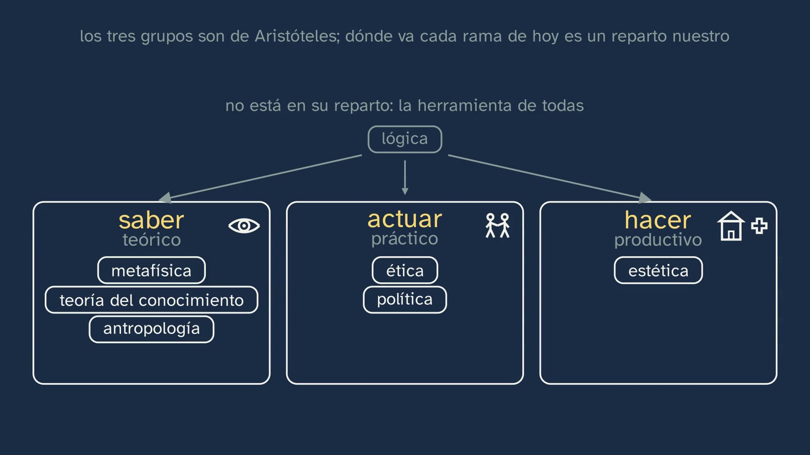
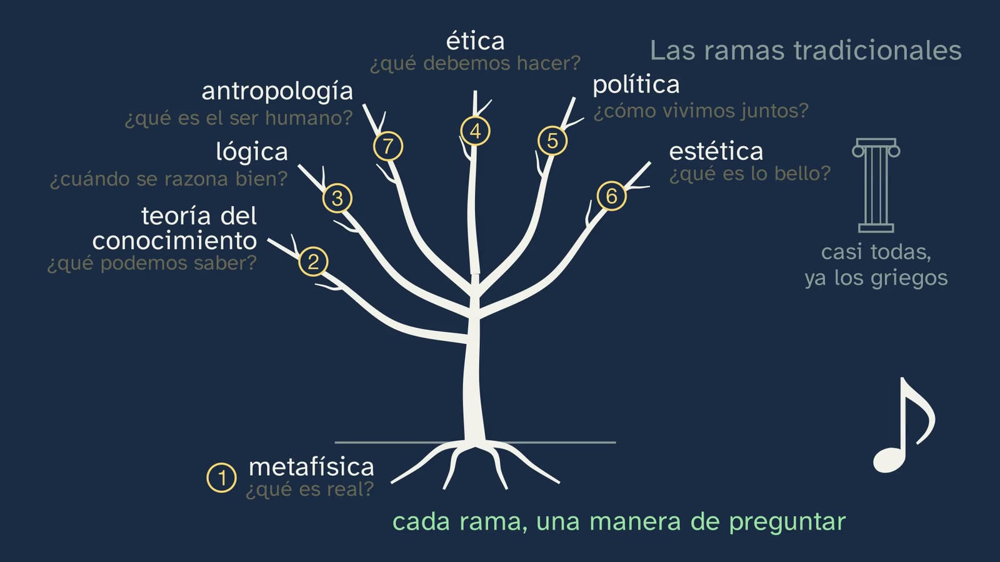
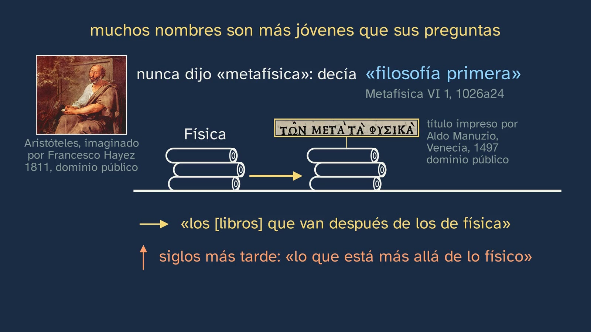
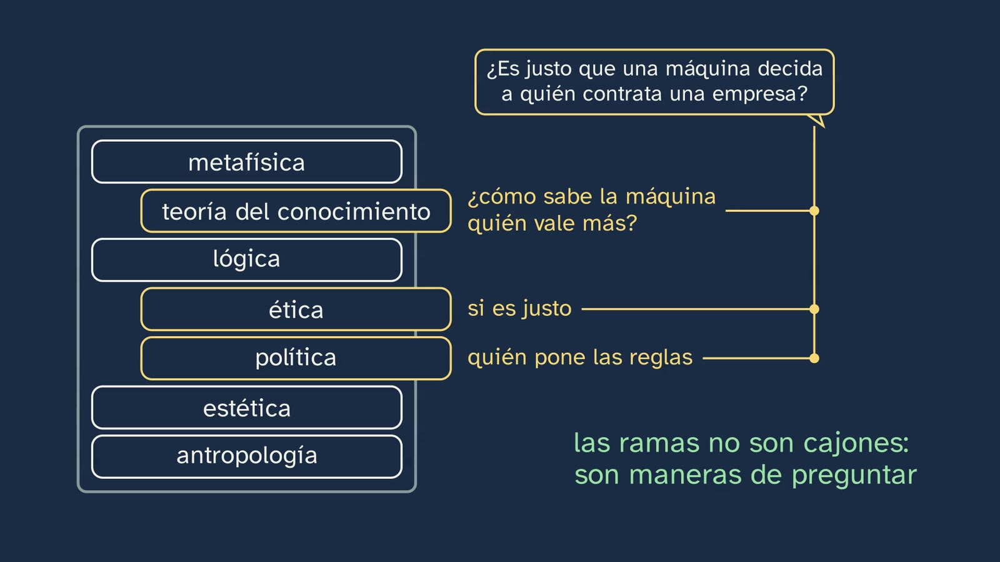
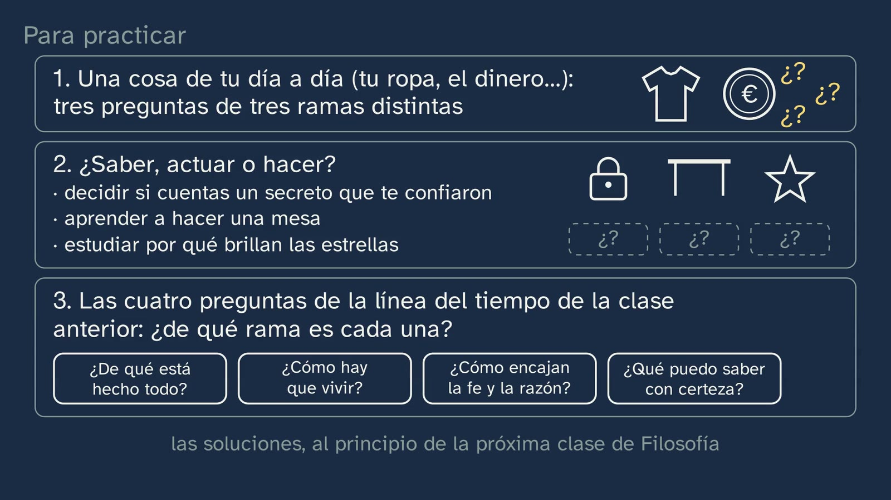
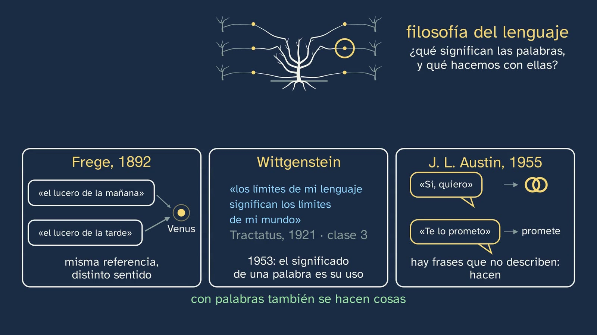
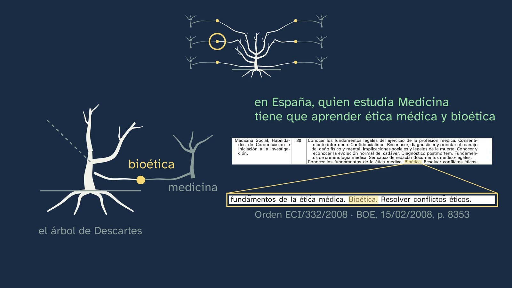
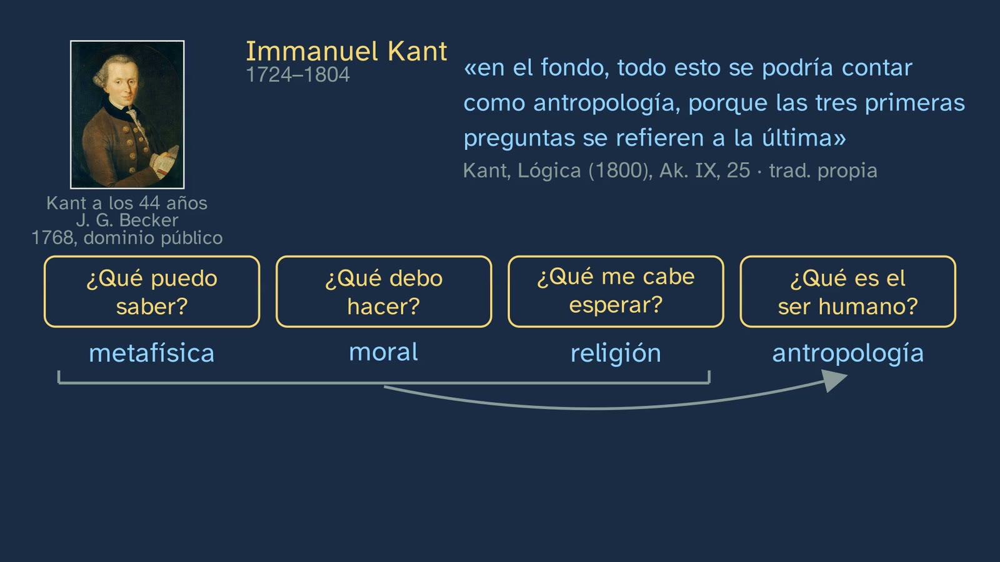

The branches of philosophy, then and now
In a nutshell
The class answers a double question: what are the branches of philosophy, and why are they not the same today as in Descartes' tree? It starts with that tree, which he published in the preface-letter to the Principles (Paris, 1647) and which is shown on the real page of an edition of 1659: the roots, metaphysics; the trunk, physics; the branches, medicine, mechanics and morals. Physics, medicine and mechanics were philosophy, and today they are sciences in their own right. Russell explained it, «partly», like this: as soon as definite knowledge about a subject becomes possible, it ceases to be called philosophy (class 1). Is philosophy running out of branches? Students predict, and the class answers in three steps:
- First, the intuition. Eight questions put to a single thing, an artificial intelligence assistant, make the seven traditional branches grow one by one: metaphysics (what is real), theory of knowledge (what we can know), logic (when we reason well), ethics (what we ought to do), politics (how we live together), aesthetics (what is beautiful) and anthropology (what the human being is). The eighth, «does it think?», is kept for later. What separates the branches is the question, not the thing: that's why, rather than topics, they are ways of asking, and they work for a phone, a law or a song. Along the way, many names turn out to be younger than their questions: Aristotle never said «metaphysics».
- The mistake, taken apart: the branches are not drawers. Is it fair for a machine to decide whom a company hires? It belongs to ethics, but also to politics and to theory of knowledge.
- How they are ordered: Aristotle's three groups of knowledge (theoretical, practical and productive), with the sorting of today's branches labelled as the class's own and logic left outside, as the tool of them all; and, at the end, Kant's four questions, each with the branch he gave it.
In between comes the answer to the prediction: philosophy grows new branches where it crosses the sciences, both the ones that left and new ones. There are six, with the same weight, each with a real idea. Where it crosses psychology, medicine and computer science: philosophy of mind, with Elisabeth of Bohemia's question of 1643, which comes back from class 3; bioethics, with ventilators, the Harvard committee's criterion of death (1968) and the regulation that requires it today in Medicine; and the ethics of artificial intelligence, with Philippa Foot's trolley, which is discussed today in connection with driverless cars, and its caveat. And where it crosses physics, linguistics and ecology: philosophy of science, with three answers to one and the same question, what makes something science (Karl Popper, 1934: a theory is scientific if it could turn out to be false, like Einstein's prediction, which could have failed at the 1919 eclipse; Thomas Kuhn, 1962: sometimes science changes its paradigm; Paul Feyerabend, 1975: there is no single scientific method); philosophy of language, with Frege's morning and evening stars (1892: Venus, two names with the same reference and a different sense), the turn taken by Ludwig Wittgenstein, who comes back from class 3 (1921 and 1953: from «the limits of my language mean the limits of my world» to «the meaning of a word is its use», in many cases), and Austin's sentences that do things (1955: «I do», «I promise»); and environmental ethics, with the circle of those who count: people; those who can suffer, with Bentham's question (1789), taken up by Peter Singer (1975); Aldo Leopold's land (1949); and, in time, those not yet born.
Aim. By the end, students will be able to name the traditional branches of philosophy (logic, theory of knowledge, metaphysics, anthropology, ethics, politics and aesthetics) by the question each one asks, and some current areas, such as philosophy of mind, bioethics, the ethics of artificial intelligence, philosophy of science, philosophy of language or environmental ethics, each with its question.
It's a map of the course, not a course on each branch: each one is studied slowly in its block of the decree (see «The depth of year 1»).
The words.
- Branch, division, discipline. The decree speaks of «traditional divisions» and of «current areas of research»; the class says «branches» because its thread is Descartes' tree.
- Theory of knowledge. This is the name the class uses (in Spanish, teoría del conocimiento); in English it is usually called epistemology. In its basic knowledge, the decree speaks of «the philosophical problem of knowledge» and of «theories of knowledge» (block B.1). Other Spanish names are gnoseología and epistemología. The latter has two uses in Spanish: as a synonym of theory of knowledge, which is the sense of English epistemology (James Ferrier introduced it into English philosophy in 1854) and the one used in several popular videos; and as philosophy of science, which is the definition in the Spanish Academy's dictionary (DLE): «Theory of the foundations and methods of scientific knowledge». The decree itself uses «epistemología» once, in the description of competence 7, next to «ontología». The class uses only «teoría del conocimiento»; if «epistemología» comes up, it's worth explaining its two uses. In English, «epistemology» is simply the usual name of the branch.
- Ethics and morals. The class uses them as equivalents («ethics, the morals of Descartes' tree», 4:29; Kant writes Moral, 15:06), which is how they are often used in the tradition. Some textbooks distinguish them; if it comes up, it's enough to say so, without opening that debate there.
- First philosophy. What Aristotle called the knowledge we now call metaphysics.
Curriculum
Royal Decree 243/2022, Philosophy (consolidated text in the BOE; our working copy is identical, checked for the topic sheet). The knowledge is from block A, «Philosophy and the human being», section 1, «Philosophical reflection on philosophy itself». The minutes are those of the video.
| Element | What the decree says | Where it is worked on |
|---|---|---|
| Basic knowledge (block A.1) | «[…] The traditional divisions of philosophy and current areas of research. […]» | The whole class: the seven branches by their question (3:53 to 5:34), how they are ordered (Aristotle, 7:04; Kant, 14:38) and six current areas, each with its story or its document (8:14 to 14:36) |
| Basic knowledge (block A.1) | «Philosophy in relation to other fields of knowledge and human activity.» | Only touched on: the sciences that left the tree (2:45) and the crossings where the new branches sprout (8:14). It is the knowledge of class 5 |
| Specific competence 1 | «To identify problems and formulate questions about the foundation, value and meaning of reality and of human existence, through the analysis and interpretation of texts and other forms of philosophical and cultural expression, in order to recognise the radical nature and transcendence of such questions […]». Its description asks that wonder be given «a formal and methodological channel, a specific language and a cultural tradition» | Eight questions to one and the same object (3:32). The names of the branches are part of that «specific language». Exercise 1 and the activity: turning any thing into questions from several branches |
| Specific competence 6 | «To understand the main philosophical ideas and theories of the most important thinkers, men and women, through the critical and dialectical examination of them and of the fundamental problems they respond to […]» | Descartes (2:25), Aristotle (5:36 and 7:04), Elisabeth of Bohemia (8:28), Popper (10:50), Kuhn (11:20), Feyerabend (11:36), Frege (12:15), Wittgenstein (12:40), Austin (13:03), Singer and Bentham (13:45), Leopold (14:03) and Kant (14:38), each with their text or their example |
| Specific competence 7 | «To acquire a global, systemic and transdisciplinary perspective in approaching fundamental and current questions, analysing and categorising their multiple aspects […] and integrating information and ideas from different disciplinary fields from the fundamental perspective of philosophy […]» | A question that crosses three branches (6:19); the new branches, where philosophy crosses psychology, medicine and computer science (8:14), and physics, linguistics and ecology (10:37) |
| Criterion 1.1 | «To recognise the radical nature and transcendence of philosophical problems through their recognition, analysis and reformulation in texts and other means of expression, whether philosophical, literary, historical, scientific, artistic or relating to any other cultural sphere.» | A phone, a law and a song (5:29); a regulation from the BOE (9:49); exercise 1 and the activity |
| Criterion 6.1 | «To become aware of the richness and influence of philosophical thought by identifying and analysing the main philosophical ideas and theories in texts or documents from diverse cultural spheres, as well as by relating them to common and current experiences, actions or events.» | The page with the tree, in an edition of 1659 (2:25), the title printed in 1497 (5:36), the Harvard report (9:25), the 2008 Order (9:49), Wittgenstein's two sentences, typed out (12:46 and 12:59), and Bentham's question, typed out (13:56); and, related to experiences and events, the 1919 eclipse (11:05), a wedding and a promise (13:12), homework with AI, hiring done by a machine and driverless cars |
| Criterion 6.2 | «To acquire and demonstrate a meaningful knowledge of the philosophical ideas and theories of some of the most important thinkers, men and women, in history, through their application and critical analysis in the context of the individual or collective practice of philosophical inquiry.» | Aristotle, Descartes, Kant and Elisabeth of Bohemia, applied: the sorting of today's branches (7:44) and exercises 2 and 3 |
| Criterion 7.1 | «To tackle complex questions and problems of a fundamental and current nature in an interdisciplinary, systematic and creative way, using concepts, ideas and procedures from different fields of knowledge and orienting and articulating them critically from a philosophical perspective.» | Bioethics, AI ethics (9:09 to 10:36) and environmental ethics (13:25); the open question (16:49) |
The current areas. The basic knowledge asks, in those words, for «the traditional divisions of philosophy and current areas of research», and the class gives six. Three have their name in the decree itself, in other blocks: «Philosophy of mind» (B.2, next to the «debate on artificial intelligence»), «Philosophy of science» (B.1) and «Environmental ethics» (C.1); bioethics and AI ethics fit within «Applied ethics» (C.1). «Philosophy of language» is not among the basic knowledge (only «Consciousness and language», in A.2), but it is the usual name of the discipline. The description of competence 7 says it almost in the class's words: «eco-social problems» are better understood with an analysis in which «scientific data and explanations are integrated together with philosophical conceptions». Why philosophy of science and environmental ethics are left open. Both are told with real content, but without closing them: philosophy of science gives three answers to one and the same question (Popper, Kuhn and Feyerabend) without deciding between them, and environmental ethics leaves as a question how far the circle of those who count reaches. Both have their place in the course (on the channel, topic 6, with the demarcation of science, and topic 9, with applied ethics), and the class says so: «we'll look at it in depth» (12:01 and 14:21). Here they have to remain branches, with their question and a first idea of how it is answered. Bentham's and Singer's question also touches a piece of knowledge the decree names separately, in C.1: «animal rights».
The depth of year 1. The subject's knowledge aims «to give students a basic, overall view of the rich and complex field of study that philosophy comprises», and in each case «some may be explored in more depth than others» (introduction to the subject). This class is precisely that overall view: the map students will use to find their way through the rest of the course. The decree itself is organised in three blocks, and it's worth setting them beside Aristotle's three groups, because they don't fully match:
| Block of the decree | What it contains | Compared with Aristotle's groups, as the class sorts them (7:44) |
|---|---|---|
| A. Philosophy and the human being | A.1, philosophy itself (this class); A.2, «The human being as subject and object of philosophical experience»: anthropology | The class puts anthropology under «knowing»; the decree takes it out of «Knowledge and reality» and puts it in the first block |
| B. Knowledge and reality | B.1, knowledge and truth, with «Notions of formal logic», philosophy of science and «the problem of metaphysical knowledge»; B.2, reality, with «The mind-body problem. Philosophy of mind and the debate on artificial intelligence» and «The philosophical problem of the existence of God» | It is the theoretical group, «knowing». But logic, which the class leaves out of the sorting as a tool, the decree puts here, in B.1 |
| C. Action and creation | C.1, «Human action: ethical and political philosophy», with «Applied ethics» and «Environmental ethics»; C.2, «Philosophical reflection on artistic creation» | «Acting» (C.1) and «making» (C.2), together in a single block |
Two mismatches, then: anthropology and logic. The decree's introduction describes the blocks like this: after the first, «two other blocks, one devoted to the analysis of basic questions about knowledge and reality, and another to the problems relating to ethics, political philosophy and aesthetics». And in competence 8 it speaks of the «twofold theoretical and practical dimension» of philosophy and calls ethics and political philosophy «the two main practical disciplines of philosophy». On the channel, each branch comes back in its own topic: logic, in 2; anthropology, in 4; theory of knowledge, in 5; philosophy of science, in 6; metaphysics and philosophy of mind (with the question «can a machine think?»), in 7; ethics, from 8 to 11, with applied ethics in 9; politics, in 12 and 13; and aesthetics, in 14.

What students need to bring.
- From class 1: Russell and the sciences that leave, «partly» (The Problems of Philosophy, 1912, p. 240); Aristotle's highest knowledge, which «is not productive» (Metaphysics I 2, 982b11); the four features of philosophical knowledge.
- From class 2, the one with the table: Descartes' tree and Kant's four questions, with his «in reality, all these might be reckoned under anthropology».
- From class 3: the questions of the four eras (they are exercise 3), Elisabeth of Bohemia's question to Descartes (1643), Philippa Foot's trolley (1967) and Wittgenstein's sentence about the limits of language (Tractatus 5.6), which comes back today with his turn.
- From lower secondary (ESO) (Royal Decree 217/2022), Education in Civic and Ethical Values: «Critical and philosophical thinking» and «Ethics as a guide for our actions» (block A); «Codes of professional ethics. Applied ethics» and «Ethical aims and limits of scientific research. Bioethics. The challenge of artificial intelligence» (block B). The word «bioethics» may sound familiar to them; what's new is seeing it as a branch, with its origin. The national lower-secondary curriculum doesn't present philosophy as a discipline, nor its branches (some regions offer an optional Philosophy subject in year 4): for many students, «metaphysics» or «theory of knowledge» are new words.
What the regions add (contrast only, read in their official gazettes):
| Region and regulation | What it adds | Where the class covers it |
|---|---|---|
| Andalusia · Order of 30 May 2023, BOJA no. 104, 02/06/2023 | In criterion 1.1, «appropriately using the specific technical vocabulary of the different branches of Philosophy to formulate and analyse these problems» | Each branch with its name and its question (3:53 to 5:34); the worksheet table; the activity |
| Castile and León · Decree 40/2022, BOCYL no. 190, 30/09/2022, p. 49838 | Next to the relationship with other fields of knowledge: «Philosophy as a theory of rationality. Technical rationality, theoretical rationality and practical rationality as spheres of philosophical reflection». And in its introduction (p. 49827): «Since the 18th century, once the sciences gained autonomy from philosophy, philosophy became above all a theory of rationality» | Aristotle's three groups (7:04): theoretical, practical and productive are, under another name, theoretical, practical and technical rationality. And the sciences that leave the tree (2:45) |
| Catalonia · Decret 171/2022, DOGC no. 8758, 22/09/2022, annex 2, pp. 168–170 | It orders all the knowledge with four questions: «Què és l'ésser humà? / Què puc saber? / Què he de fer? / Com vivim junts?» (What is the human being? / What can I know? / What must I do? / How do we live together?). They are three of Kant's and a fourth about living together: it doesn't ask what I may hope, and it doesn't name Kant. Under the first, «Identification and classification of the traditional divisions of philosophy in addressing human problems» (in Catalan in the original) | Kant's questions (14:38), with the difference in view: Kant's third goes to religion; the fourth Catalan one is, word for word, the question the class gives to politics: «how we live together» (4:40). The activity «Three sortings» works on it |
| Galicia · Decree 157/2022, DOG no. 183, 26/09/2022 | «The great subdisciplines of philosophy: the traditional philosophical fields of knowledge» and «New topics and current areas of philosophical research» (in Galician in the original) | The seven branches and the six current areas |
| Madrid · Decree 64/2022, BOCM no. 176, 26/07/2022, p. 150 | It includes the decree's knowledge, word for word: «The traditional divisions of philosophy and current areas of research» | The whole class |
| Valencian Community · Decree 108/2022 | It doesn't include the divisions of philosophy | — |
Where the textbooks cover it. Of the twelve Spanish textbook projects we compared, with their unit 1 at hand, eight include the branches: SM, Santillana, Oxford, McGraw Hill, Vicens Vives, Casals (2022), Casals «Radix» and Editex. Santillana, Vicens Vives (with Kant's two uses of reason) and Editex (with a section headed «Theoretical and practical rationality») group them into theoretical and practical. SM organises the whole book around Kant's four questions; tekman, in Catalan, around the four of the Catalan curriculum. Current areas: Santillana (the cognitive sciences) and Vicens Vives (philosophy of language, of mind and of history). Casals (2022) puts the branches in a table of questions.
How the class is built
Video chapters
About seventeen and a half minutes (17:26), in nine chapters. Javier appears on camera four times: when he says hello (0:00), with the hook (0:12), halfway (6:59) and when he says goodbye (17:17). The thread is a tree, Descartes', which loses branches, gains today's and puts out shoots where philosophy crosses the sciences. The decree asks for teaching that is «largely dialogical», not «a mere programmatic exposition of topics and questions» (introduction to the subject): that's why the class doesn't recite a list of branches, but poses a problem (is philosophy running out of branches?), has students predict, and solves it with documents.
| Chapter | What happens | Why |
|---|---|---|
| What we'll see (0:00) | Javier says hello; the topic map, with the fourth class boxed (0:05). Hook to camera (0:12): for Descartes, almost four centuries ago, physics was philosophy; today it no longer is. What does philosophy have left? | Knowing where you are, and a question with its who, its when and its where. |
| Solutions to the previous class (0:22) | All three, each with its exercise: the order of the four questions of the eras, each with its who (the philosophers of Miletus, Socrates, Averroes and Thomas Aquinas, 0:50, and Descartes); Elisabeth of Bohemia's question, critical and rational, with her reasoning drawn: a soul, an arrow that pushes and a ring it never manages to touch («Keep Elisabeth's question in mind: it comes up again today», 1:27); and the woman philosopher with her work, with the whole exercise (1:32), on two shelves: on one, Christine de Pizan, with the miniature of her study, and her City of Ladies, which «answers those who spoke ill of women» (1:47); on the other, four gaps with names, Lastheneia, Axiothea, Hipparchia and Hypatia (1:52), where Hipparchia's and Hypatia's books appear and fall, because they were lost. | Spaced practice, without dragging it out, and a hook for Elisabeth. |
| Descartes' tree (2:07) | Retrieval: what did he put in the roots, the trunk and the branches? (2:15; countdown at 2:20). The real page, in an edition of 1659 (2:25), with each word highlighted as it is said. Physics, medicine and mechanics «were part of philosophy» (2:49): they break off and become sciences; Russell, «partly», with his idea typed out (2:59); psychology, at the end of the 19th century (3:12). Predict (3:18; countdown at 3:28): is it running out of branches, or is it growing others? | What students already know, with its document, poses the class's question without stating it. |
| One thing, eight questions (3:32) | An AI assistant on a drawn phone. Before answering the prediction, today's branches are drawn: each question comes out of the phone and makes its branch grow (3:53 to 5:03), with each branch's underlying question in the voice; the eighth, «Does it think?», is kept for later (5:03). The seven traditional branches, numbered 1 to 7 (5:09): «almost all» their questions were already Greek (a Greek column, «almost all, already the Greeks», 5:18); rather than topics, ways of asking; the phone turns into a law and a song (5:29). The names, younger than their questions (5:36): Aristotle said «first philosophy»; on a shelf, the scrolls of the Physics and, behind them, other scrolls with their label, the title Aldus Manutius printed in 1497 (5:47); a horizontal arrow, «the [books] that come after those on physics» (5:51), and another one pointing up, «beyond the physical», centuries later (5:56). | A single object with all the questions: what changes from one branch to another is the question, and students see it without being told. |
| A branch for each question? (6:02) | Stop and think (6:05; countdown at 6:13): is it fair for a machine to decide whom a company hires? Which branch does it belong to? The mistake (6:19): «Not bad», it's ethics, and the question goes into a single drawer; but it's also politics and theory of knowledge. «I insist» (6:47): the branches are not drawers, and from each open drawer a thread rises up to the question. Javier, halfway (6:59). | The mistake, with what's reasonable about it, taken apart with a real question. |
| Knowing, acting, making (7:04) | Aristotle and his three groups, according to what they seek, with his sentence from the Topics typed out and a chalk drawing in each panel: an eye («knowing for the sake of knowing»), two people holding hands (ethics and politics) and a house with a cross (building, healing). The highest knowledge, which «is not productive», from class 1 (7:28): theoretical, «first philosophy». The sorting of today's branches, «ours, not his» (7:44); logic, outside, with an arrow to each panel: «the tool of them all» (8:06). | How they are ordered, with the author who did it first and with a warning about what is the class's own. It retrieves class 1. |
| New branches (8:14) | The prediction, answered: it grows others, where it crosses the sciences, «both the ones that left, and new ones». The map of crossings has all six from the start: the tree in the centre; on the left, psychology, medicine and computer science; on the right, physics, linguistics and ecology; the lower shoots come out of the trunk. Each branch is told with its ring on the map. Philosophy of mind: «does it think?» requires knowing what thinking is and how what thinks is joined to something material, and Elisabeth's question comes back, drawn (8:28); the branch, with its three questions (what the mind is, how it is joined to the body, whether a machine could have one), where philosophy crosses psychology and the study of the brain (8:54). Bioethics (9:09): ventilators, with a beating heart and a hopelessly damaged brain, drawn; alive or dead?; the Harvard committee (1968). Descartes' tree comes back (9:35): the medicine branch leaves and becomes a science, and a shoot from each tree joins in a bud, bioethics; and the regulation that requires it in Medicine, with its page from the BOE (9:49). AI ethics (9:54): the hiring question «also lives there» (10:03); Foot's trolley at the junction, five people on one track and one on the other, with its driver in the cab, «the driver decides» (in Foot's case he decides; the person by the lever is Thomson's variant), which turns into a car (10:10); «There's a difference» (10:22): the driver disappears, «nobody decides at the moment», and below, a laptop: «it's decided beforehand by those who program it»; and the caveat (10:30). Philosophy of science (10:37), where philosophy crosses physics and all the sciences, which grows above all in the 20th century: what makes something science, and how it advances (10:45). Popper, 1934 (10:50): «a theory is scientific if it could turn out to be false»; drawn, the Earth, the Sun and a star, whose light, according to Einstein's theory, bends near the Sun twice as much as with Newton (10:58); at the 1919 eclipse the Moon covers the Sun (11:05) and two British expeditions measure it: «it could have failed, and it didn't»; «it takes a risk» (11:14). Kuhn, 1962 (11:20): some steps, «little by little», and a jump in yellow, «revolution: the paradigm changes» (11:27), from Newton to Einstein. Feyerabend, 1975 (11:36), who had studied with Popper: «there is no single scientific method», with several paths from one point to the same goal; according to him, advances like Galileo's broke the rules (11:45); «he wasn't saying science is worthless» (11:52). All this shrinks into three sibling cards, «three answers to one and the same question» (11:58), and «in depth, in the topic on science» (12:01). Philosophy of language (12:05), where philosophy crosses linguistics: what words mean, and what we do with them (12:11). Frege, 1892 (12:15): «the morning star» and «the evening star», with two arrows to Venus, their reference (12:25), and beneath each one its sense, «shines at dawn», «shines at nightfall» (12:31): «same reference, different sense», and «that's why saying that one is the other teaches us something» (12:38). Wittgenstein (12:40), «whom you already heard in the previous class», on the right: «the limits of my language mean the limits of my world», typed out (Tractatus, 1921; 12:46); an arrow pointing down, «a turn» (12:57), and, from his Philosophical Investigations, published posthumously (1953), «the meaning of a word is its use in the language», typed out (12:59), with the qualification in the voice: «in many cases». Frege and Wittgenstein shrink into two sibling cards (13:03; on Wittgenstein's, the sentence about the limits and «1953: the meaning of a word is its use»), and Austin, 1955, arrives on the third (13:07): sentences that don't describe anything, but do something; «Sí, quiero» («I do»), with two rings: whoever says it «is getting married» (13:12); «Te lo prometo» («I promise»): whoever says it «promises» (13:18); «with words we also do things» (13:21), and the three cards light up. Environmental ethics (13:25), where philosophy crosses ecology: what we owe to nature, and to those not yet born (13:31); its big question, how far the circle of those who count reaches (13:36). A growing circle: people (13:40); those who feel, with a fish and a paw print (13:47); Bentham's question (1789), taken up by Singer (1975), typed out (13:56); Leopold's land (1949), with a tree and water (14:07); and an arrow towards «those to come» (14:17); «in depth, when we get to ethics» (14:21). Close (14:26): the tree with the six and their names, «when the world changes, new questions appear: in those crossings, branches grow» (14:29). | Each new branch with a person, a date and an idea that can be understood, drawn. Six branches with the same weight. What class 3 told (Elisabeth, Foot and Wittgenstein's sentence) comes back with another use. And three answers to one and the same question, on three sibling cards (in science and in language), teach that a branch is not a doctrine, but a debate. |
| Kant's four questions (14:38) | Retrieval: «Do you remember them? Try to say them before going on» (14:45; countdown at 14:49, with four empty boxes); Javier says them and they are typed into their boxes (14:53). Each with its branch, as he wrote it (15:01): metaphysics, morals, religion «thought out by reason» and anthropology; his metaphysics included what we now call theory of knowledge (15:21); and the first three end up in the last: a brace under their branches and three dots that climb an arrow to the fourth box (15:32). Recap (15:38): «there's no single way to sort them», with the three in small (Aristotle's three kinds of knowledge, Descartes' tree and Kant's four questions, «know?, ought?, hope?, human?»); today's tree, each branch with its question; the sciences that left and the six new branches. | Another way of sorting, to find one's bearings and to close: students see three ways of ordering the same thing. |
| Practice and keep thinking (16:08) | Three exercises, each on its card with a drawing (16:12), the open question (16:57; countdown at 17:03) and class 5 (17:11). Goodbye (17:17): «each branch is a way of asking. And when the world changes, philosophy grows new branches». | The solutions open class 5. |


A plan for a 50-minute lesson
Designed so that the activity comes when students have already seen the drawer mistake and Aristotle's three groups, and before the new branches.
| Minutes | What happens |
|---|---|
| 0–2 | No video: «Before you start», on the worksheet. Which branches they know and what they think has happened to philosophy since physics was part of it. |
| 2–8 | Video from 0:00 to 3:32 (if the solutions to class 3 have already been corrected, skip from 0:22 to 2:07). Stops at 2:20 (the tree: everyone writes it down before seeing it) and at 3:28 (the prediction, in writing: it comes back at 8:14). |
| 8–14 | Video from 3:32 to 8:14. The worksheet's table of the eight questions is filled in as it goes. Stop at 6:13: one minute in pairs, «which branch does it belong to?», before seeing the answer. |
| 14–33 | The activity: one object, seven questions (below). |
| 33–43 | Video from 8:14 to 16:08. At 14:49, Kant's four questions, from memory and in writing, before hearing them. At the end, reread the prediction: who got it right, and why? |
| 43–47 | Video from 16:08 to the end (17:26). The open question, aloud or in the philosophical journal. |
| 47–50 | «At the end of the class», on the worksheet. The exercises, for homework. |
If time is short, the whole video, with its stops (about 23 minutes), and the short activity, «Three sortings» (10 minutes), instead of the long one.
If exercise 3 of the previous class is corrected in the classroom (5 minutes, before the video), the bookcase on the board (1:32) works well: two shelves on the classroom board, «with a work» and «no surviving work». Each student puts on the first a «book» with the woman philosopher they chose, her work and its year; Lastheneia, Axiothea, Hipparchia and Hypatia go on the second, as gaps with their names and with the reason: what Hipparchia and Hypatia wrote was lost, and of all four we only know what others tell (see the class 3 sheet, exercise 3).

Typical mistakes and how they are handled
These are frequent confusions the design anticipates; as far as we know, there is no didactic research on them as solid as there is in the sciences. Several were repeated in a review of widely watched popular videos, made to prepare the class.
- «The branches are drawers: each question goes in one.» This is the class's mistake (6:19). It has some truth: each branch has its own question, and the names help to find one's bearings. But a real question usually crosses several. «Is it fair for a machine to decide whom a company hires?» belongs to ethics (whether it's fair), to politics (who sets the rules for that machine) and to theory of knowledge (how the machine knows who is worth more). The class doesn't tell whoever said «ethics» that they're wrong («Not bad»), repeats the point with a warning (6:47: «I insist, because it's today's idea») and, when the question comes back with AI ethics, says that it «also lives there» (10:03), not that it belongs only to that branch. The activity puts it to the test: when two groups classify the same questions, disagreements with reasons are not a failure, but the drawer mistake in plain view.
- «Metaphysics means "beyond physics", and Andronicus of Rhodes gave it the title.» The class corrects it (5:36). Aristotle never used the word: he called that knowledge «first philosophy» (Metaphysics VI 1, 1026a24 and a30), and also «wisdom» and «theological». The title, τὰ μετὰ τὰ φυσικά, means «the [books] that come after those on physics» (DLE, «metafísico»; Stanford Encyclopedia, «Metaphysics»). That Andronicus of Rhodes gave it in the 1st century BC is the traditional attribution, not a fact: some place it earlier, in Aristotle's school (Moraux; Reiner). And «beyond the physical» is a later reading, from the Neoplatonists and the Middle Ages. Four of the videos reviewed repeated the mistake. The board puts it on a shelf (5:36): the scrolls of the Physics and, behind them, those of the Metaphysics; the horizontal arrow is the editors' reading, «after», and the vertical one, the reading of centuries later, «beyond». In class it's enough to ask what each arrow says, and which reading is older.
- «Philosophy is the mother of the sciences», or its pessimistic version, «philosophy is being left with nothing». In Descartes' tree, physics, medicine and mechanics were not daughters of philosophy: they were part of it, and they broke away (2:45). Russell explained this only «partly» (1912, p. 240), and straight away adds that it is «only a part of the truth» (pp. 240–241). Psychology broke away late, and from inside: Wundt, who opened the first psychology laboratory in Leipzig in 1879, held a chair of philosophy. That «medicine came out of philosophy» isn't history either: it's Descartes' image, because in Greece medicine was already an art of its own. The class presents it as his: «in Descartes' tree» (2:45, 9:35). And the prediction has an answer: philosophy grows new branches (8:14).
- «There are six branches (or seven, or twenty-two), and you have to learn them.» There is no fixed number and no single way to sort them: Aristotle made three groups, Descartes drew a tree with three main branches, Kant asked four questions and the decree orders the course in three blocks. The class says so in the recap (15:39: «There's no single way to sort them»). What's worth learning is each branch's question: with it, you can recognise any branch in any list.
- «Aristotle divided knowledge into theoretical and practical», with production inside the practical. There are three: «if all thought is either practical or productive or theoretical» (Metaphysics VI 1, 1025b25; tr. W. D. Ross). And the difference between acting and producing is his: «neither is acting making nor is making acting» (Nicomachean Ethics VI 4, 1140a1–6; tr. Ross); making has its end outside itself, and in acting «good action itself is its end» (VI 5, 1140b6–7; tr. Ross). None of the videos reviewed gave the three groups.
- «For Aristotle, logic was the Organon, the tool of all the sciences.» His division of the sciences doesn't mention logic (Stanford Encyclopedia, «Aristotle»: it «makes no mention of logic»), and the name Organon, «instrument», is later: it comes from the Middle Ages, «although not so characterized in these terms by Aristotle». That's why the class says «it doesn't appear in his division: it serves them all, like a tool» (8:06), without putting the words in his mouth. The decree does count it among the knowledge (B.1, «Notions of formal logic»).
- Kant, wrongly distributed. Some put «what may I hope?» before «what ought I to do?», or spread the first among several of today's disciplines, such as theory of knowledge. Kant writes Metaphysik (Logic, Ak. IX, 25). The class says it as he did (15:01) and adds a gloss afterwards (15:21): for Kant, metaphysics included examining what we can know (in the Critique of Pure Reason, A841/B869, the whole of pure philosophy, critique included, can be called «metaphysics»). And the third goes to religion, «thought out by reason». Said baldly, a student would understand that religion is a branch of philosophy, just before class 5, which distinguishes them.
- «Elisabeth of Bohemia was the first to raise the mind-body problem», or the opposite: telling it without her, as a problem with no owner. It is one of its clearest and most famous formulations (Stanford Encyclopedia, «Mental Causation»), and that's how the class puts it («one of the most famous forms», 8:49). But Gassendi had already raised a similar objection in the Fifth Objections to the Meditations, in 1641 (Internet Encyclopedia, «Descartes: Mind-Body Distinction»; Richardson, 1982). Project Vox, following Shapiro, calls her «plausibly the first»: probably, not certainly.
- «Potter invented bioethics in 1971.» The word was first used by Fritz Jahr, in 1927 («Bio-Ethik», in the magazine Kosmos), for an ethics of our relations with animals and plants. Van Rensselaer Potter coined it again independently in a 1970 article and a 1971 book; and in 1971, at Georgetown, André Hellegers used it for medical ethics, the sense that prevailed (Reich, 1994). The class names no inventor: «around those years a word spread» (9:29).
- «The trolley problem is the ethical problem of driverless cars.» It really is discussed in connection with those cars (Stanford Encyclopedia, «Ethics of Artificial Intelligence and Robotics»; Nyholm and Smids, 2016). But many doubt that a real car will ever have to solve it: for them, what matters more is that there are as few crashes as possible, how the risk is shared out and who is answerable (Nyholm and Smids, 2016; De Freitas and others, 2020). The class says so (10:30) and underlines the difference that teaches most: in Foot's trolley the driver decides at the moment; in the car, it's decided beforehand by those who program it.
- «A scientific theory is a proven theory.» For Popper it's almost the other way round: what makes it scientific is that it could turn out to be false, that it takes a risk. Passing a test doesn't prove it: crucial tests, he writes, are tests «which could refute the theory tested, though they could never establish it» (Unended Quest, § 8, p. 39). The class says it carefully: «it could have failed, and it didn't» (11:09), not «it was proven». And the 1919 measurements were imprecise (Sobral, 1.98″ ± 0.12″; Príncipe, 1.61″ ± 0.30″, against Einstein's 1.75″): they were enough to rule out Newton's value, and precision came later (see «To go further»).
- «For Feyerabend, anything goes in science.» The «anything goes» is in his book (1975, pp. 27–28), but in 1987 he made clear that it is not a principle of his, but «the terrified exclamation of a rationalist who takes a closer look at history» (Against Method, 3rd ed., p. vii), and that what he holds is that all rules have their limits, not that we should work without rules («I do not argue that we should proceed without rules and standards», ch. 18, pp. 230–231). The class says so: «He wasn't saying science is worthless: he was saying all methods have their limits» (11:52). Nor should Kuhn be made to say that science changes overnight: a revolution, he writes, is «seldom completed by a single man and never overnight» (1962, p. 7). The jump on the board (11:27) is a change of framework, not of speed.


Questions and solutions
In the video
- Do you remember what Descartes put in the roots, the trunk and the branches? (2:15; the pause, at 2:20). In the roots, metaphysics; in the trunk, physics; in the branches, «all the other sciences», which «are reduced to three principal» ones: medicine, mechanics and morals, «the highest and most perfect», which for him is «the last degree of wisdom». And the fruit is not gathered from the roots or the trunk, but «from the extremities of their branches» (preface-letter to the Principles, 1647; AT IX-2, 14–15; tr. J. Veitch). What will come up: confusing the trunk with the roots, or putting mathematics, biology or law in the tree (two of the videos reviewed draw it that way).
- Predict: with so many branches leaving, what happens to philosophy? Is it running out of branches, or is it growing others? (3:18; the pause, at 3:28). Any reasoned answer is fine. The class's answer arrives at 8:14: it grows others, where it crosses the sciences. It's worth valuing anyone who sees both things at once: some branches leave, as Russell says, and new questions appear. Careful: the eight questions about the phone (3:32) don't answer the prediction yet; they draw the branches it already had, «almost all» of whose questions the Greeks were already asking (5:09).
- The eight questions to the assistant (3:53 to 5:03; no pause, but the worksheet collects them in a table). What is it, deep down? Metaphysics: what is real. If it tells you something, how do you know it's true? Theory of knowledge: what we can know, and how. Is it well reasoned, or does it just sound good? Logic: when we reason well. Should you use it to do your homework? Ethics: what we ought to do. Who decides what it can do, and what it can't? Politics: how we live together, and who is in charge. If it paints a picture, is it art? Aesthetics: what is beautiful, and what art is. If it writes like us, what makes us human? Anthropology: what the human being is. Does it think? Kept for later: it's philosophy of mind (8:28).
- Stop and think: is it fair for a machine to decide whom a company hires? Which branch does it belong to? (6:05; the pause, at 6:13). Several: ethics (whether it's fair), politics (who sets the rules for that machine) and theory of knowledge (how the machine knows who is worth more). Others fit, if reasoned: logic (are the inferences it decides with valid?) or anthropology (what does it mean for a person to be «worth» something?). Criterion: a reason for each branch. What will come up: «ethics», on its own, which isn't wrong (the class says so), or «computer science», which deals with the technology but doesn't answer whether something is fair.
- Do you remember what we saw in the first class? (7:28). That Aristotle's highest knowledge «is not productive» (Metaphysics I 2, 982b11): it's theoretical, it seeks knowledge for its own sake, and it's the one he called «first philosophy».
- What makes something science, and how does it advance? (10:45; it's the branch's question, with no pause: the class gives three answers and leaves it for the topic on science, 12:01). Popper (1934): a theory is scientific if it could turn out to be false; Einstein's said how much the light from a star would bend as it passed near the Sun, twice as much as with Newton, and at the 1919 eclipse it could have failed and didn't. Kuhn (1962): science doesn't always advance little by little; sometimes it changes its whole way of looking, its paradigm, as from Newton to Einstein. Feyerabend (1975): there is no single scientific method, and all methods have their limits. They are «three answers to one and the same question» (11:58), and the class doesn't choose between them. What will come up: «scientific is what has been proven», exactly the opposite of Popper (mistake 11), and «Feyerabend said anything goes» (mistake 12).
- What do words mean, and what do we do with them? (12:11; no pause). Three answers, on three sibling cards. Frege: two names can have the same reference, the thing, and a different sense, the way it is presented to us. The morning star and the evening star are Venus, and that's why «the morning star is the evening star» teaches something, and «the morning star is the morning star» doesn't («Über Sinn und Bedeutung», 1892, pp. 25–27). Wittgenstein, in two stages: in the Tractatus (1921), «the limits of my language mean the limits of my world» (5.6; tr. C. K. Ogden), the sentence from class 3; and in the Philosophical Investigations (1953), a turn: in many cases, the meaning of a word is its use in the language (§ 43). To know what a word means, you look at how it's used: in this way, the two halves of the question come closer together. Austin: some sentences don't describe anything, but do something: whoever says «I do» at their wedding is getting married, and whoever says «I promise», promises. What will come up: «they are synonyms»; they aren't: they name the same thing, but they don't mean the same. «For Wittgenstein, a word means whatever each person wants»: no; he speaks of use in the language, the one we share, and he himself warns that it doesn't hold for all cases. And «once you've said "I do", you're married»: it takes the «yes» of both people, and the appropriate circumstances (see «To go further»).
- What do we owe to nature, and to those not yet born? How far does the circle of those who count reach? (13:31 and 13:36; no pause: «we'll look at it in depth when we get to ethics», 14:21). An open question: the teacher doesn't give a verdict. The class draws the answers as circles: people; all those who can suffer (Singer, 1975, with Bentham's question, 1789: «the question is not, Can they reason? nor, Can they talk? but, Can they suffer?»); the land, with its soils, waters, plants and animals (Leopold, 1949); and, in time, those to come. A good answer says how far it would take the circle, and why there. What will come up: reading the circles as a history that moves forward by itself, or as progress that everyone accepts; they are neither (see «To go further»).
- Kant's four questions, from the class with the table: do you remember them? Try to say them before going on (14:45; the pause, at 14:49). What can I know? What ought I to do? What may I hope? What is the human being? (Logic, 1800, Ak. IX, 25; and his letter to Stäudlin, of 1793, Ak. XI, 429).

From the student worksheet
- Before you start. There's no right answer: it's their starting point, and they reread it at the end. What's usually worth comparing is the list of branches at the start with the table, and the sentence about physics with the class's answer: physics left, but philosophy grows new branches.
- What did Descartes put in his tree, and where were physics, medicine and mechanics? See above: physics was the trunk; medicine, one of the three main branches, with mechanics. All three became sciences in their own right.
- According to Russell, why does a subject stop being called philosophy? Because, as soon as definite knowledge about it becomes possible, it becomes a separate science; and psychology broke away at the end of the 19th century. For a high mark: Russell says this explains it only «partly».
- Why are the branches ways of asking, rather than topics? Because all the questions were about the same thing, the assistant, and each one made a different branch grow: what changes is what is asked, and that's why each branch works for anything, a phone, a law or a song.
- What does the Greek title of the Metaphysics mean, what do the two arrows on the shelf say, and what did Aristotle call that knowledge? «The books that come after those on physics»: that's the horizontal arrow, the editors' reading, since they put those scrolls behind those of the Physics. The vertical one, «beyond the physical», is a reading from centuries later. He called it «first philosophy».
- What are Aristotle's three groups, and why is logic left out? Theoretical (knowing for the sake of knowing), practical (how to act: ethics and politics) and productive (making something: building a house, healing). In the class's sorting: under «knowing», metaphysics, theory of knowledge and anthropology; under «acting», ethics and politics; under «making», aesthetics. Logic doesn't appear in his division: it serves them all, as a tool. For a high mark: that the sorting of today's branches is the class's, not Aristotle's.
- Where does philosophy grow new branches? Where it crosses the sciences: philosophy of mind, with psychology and the study of the brain (what the mind is, how it is joined to the body, whether a machine could have one); bioethics, with medicine (is a person whose heart beats thanks to a ventilator alive or dead?); the ethics of artificial intelligence, with computer science (is it fair for a machine to decide who gets hired?, what should a driverless car do?). Philosophy of science, with physics and the other sciences (what makes something science, and how does it advance?); philosophy of language, with linguistics (what do words mean, and what do we do with them?); and environmental ethics, with ecology (what do we owe to nature, and to those not yet born?).
- What do ventilators and the Medicine degree have to do with bioethics? With ventilators, the heart could go on beating with the brain hopelessly damaged, and a new question appeared: alive or dead? In 1968, a Harvard committee proposed a new criterion of death. And today the regulation that governs Medicine degrees in Spain requires students to learn «the fundamentals of medical ethics. Bioethics» (in Spanish in the original).
- Philosophy of science: what did Popper answer, and what happened at the 1919 eclipse? What is a paradigm, according to Kuhn? And what did Feyerabend argue? Popper: a theory is scientific if it could turn out to be false. Einstein's said how much the light from a star would bend as it passed near the Sun, twice as much as with Newton; at the 1919 eclipse, two British expeditions measured it: it could have failed, and it didn't. Kuhn: a paradigm is a science's whole way of looking, and when it changes there is a scientific revolution, as from Newton to Einstein. Feyerabend: that there is no single scientific method, because all methods have their limits; not that science is worthless. For a high mark: that they are three answers to one and the same question, and that the class doesn't choose between them.
- The morning and evening stars, Wittgenstein's turn and the «I do». They name the same thing, Venus, which is their reference, but they present it to us in two ways, the one that shines at dawn and the one that shines at nightfall: they have a different sense, and that's why saying that one is the other teaches something. In the Tractatus, Wittgenstein said that the limits of my language mean the limits of my world; in the Philosophical Investigations he took a turn: in many cases, the meaning of a word is its use, and to know what it means you have to look at how it's used. Whoever says «I do» at their wedding isn't describing anything: they are getting married. With words we also do things. For a high mark: Wittgenstein's own qualification, «for a large class of cases», not for all; or another of Austin's examples, such as naming a ship or making a bet.
- The circle of those who count. It's the question of environmental ethics: how far it reaches. For centuries, ethics looked above all at people. Singer (1975), with Bentham's question (1789), proposed taking into account all those who can suffer; and Leopold (1949) had already gone further: soils, waters, plants and animals, collectively, the land. In time, the circle reaches those not yet born. For a high mark: that Leopold wrote before Singer, so the circle is not a history in order.
- How is the trolley different from the driverless car? In Foot's trolley the driver decides at the moment; in the car it's decided beforehand, in cold blood, by those who program it. For a high mark, the caveat: many experts doubt that a real car will ever face such a clean dilemma.
- Which branch does Kant give to each question? Metaphysics, morals, religion and anthropology. «Thought out by reason» means that it doesn't start from a revelation: his book is called Religion within the Boundaries of Mere Reason (1793).
- The tables, the prediction, the «Stop and think» and Kant's four questions from memory: see «In the video». In class: see the activity.
- For you. They have no solution: they're for thinking about, and can go into the philosophical journal. The one about the artificial intelligence assistant is better answered in writing, so that nobody has to say aloud what they do.
Practice (the solutions open class 5)
-
Choose something from your daily life, such as your clothes or money, and ask it three questions from three different branches. There are many good answers. Two examples:
- Money. Metaphysics: what is a banknote, deep down: a piece of paper, or a promise we all believe in? Ethics: should I give back the extra change I was given by mistake in a shop? Politics: who should decide how much tax each person pays? Anthropology: why did human beings invent money, and what does that say about us? Logic: «everything expensive is good; this is expensive; so it's good»: is it well reasoned? (It's a valid argument with a false premise: logic separates the two things, and that's topic 2.)
- Clothes. Aesthetics: what makes a garment beautiful: the garment, or the person looking at it? Ethics: should I buy very cheap clothes if I suspect they were made in bad conditions? Politics: can a school impose a uniform? Anthropology: why do we wear clothes even when it isn't cold, and what do we say with them? Metaphysics: if I replace the parts of a jacket one after another, is it still the same jacket?
Criteria: three questions, from three different branches; in each one, the underlying question of its branch can be recognised; and none can be answered with a fact (how much does it cost?, who invented it?). For a high mark, a question that crosses two branches and says so. What will come up: questions with the name of the branch inside («is it ethical…?»), which aren't yet a question; logic understood as «what's logical», common sense, when it asks whether a piece of reasoning is correct; and aesthetics as personal taste («do you like it?»), when it asks what makes something beautiful.
-
Which of Aristotle's kinds of knowledge would you put each of these in? Deciding whether to tell a secret you were trusted with. Learning to make a table. And studying why the stars shine. No case is in the position of its group in «knowing, acting, making», so that the order of the exercise doesn't give the solution away.
- Deciding whether to tell a secret: acting, practical. What matters is the action itself, acting well; no product is left outside it (Nicomachean Ethics VI 5, 1140b6–7).
- Learning to make a table: making, productive. The end is outside the person who makes it: the table. It's Aristotle's example with the house (Metaphysics VI 2, 1026b6–10; Nicomachean Ethics VI 4, 1140a7).
- Studying why the stars shine: knowing, theoretical. You seek to know, for the sake of knowing. For Aristotle, astronomy went with mathematics, among the theoretical sciences (Metaphysics VI 1, 1026a26); today, with physics.
Criteria: each one in its group, with the reason given by where the end lies: in knowing, in the action itself or in a thing made. What will come up: «learning to make a table» under «knowing», because of the verb «learn»; and «deciding whether to tell a secret» under «knowing», because you have to know what's right. Both traps teach something: there is a knowledge of how something is made (art, technique) and a knowledge of how to act (practical wisdom, or prudence), and neither is knowing for the sake of knowing.
-
The four questions on the timeline of the previous class: which branch does each one belong to?
- What is everything made of? Metaphysics: what is real. And today physics answers it too: it's one of the questions the sciences took with them when they left the tree (2:45).
- How should one live? Ethics. Politics is also acceptable, if reasoned (for Aristotle, the inquiry of the Ethics «is political science, in one sense of that term», tr. Ross), and so is anthropology.
- How do faith and reason fit together? It doesn't have a single box among the seven. Acceptable answers: theory of knowledge (they're two sources of knowledge: what happens when they seem to clash?), metaphysics (it's about God: the decree puts «The philosophical problem of the existence of God» in B.2, and «religious beliefs», among the other ways of knowing, in B.1) or, with Kant, religion thought out by reason.
- What can I know for certain? Theory of knowledge. For a high mark: Kant gave metaphysics to his first question.
Criteria: a branch with its reason for each question; several are accepted if justified, and for a high mark, noticing that the question of faith and reason crosses several: it's the class's idea, once again. What will come up: «faith and reason» under ethics, from confusing religion with morality. It links with class 5.

To open class 5: the solutions, in brief
What Javier will say (in Spanish) at the start of the next class, in the same tone as this class's solutions (0:22):
- «The first asked you to choose something from your daily life and ask it three questions from three different branches. For example, money. What is it, deep down: a piece of paper, or a promise we all believe in? Metaphysics. Should I give back the extra change I was given by mistake? Ethics. Who decides how much tax each person pays? Politics. Anything works, as long as each question really belongs to its branch.»
- «The second: deciding whether to tell a secret you were trusted with is acting: practical, because what matters is the action itself. Learning to make a table is making: productive, because the end is outside you, in the table. And studying why the stars shine is knowing, for the sake of knowing: theoretical knowledge.»
- «And the third asked for the branch of the four questions on the timeline. What everything is made of belongs to metaphysics, and today to physics too. How one should live, to ethics. What I can know for certain, to theory of knowledge; Kant said metaphysics. And how faith and reason fit together doesn't fit in a single drawer: it touches theory of knowledge, metaphysics and, with Kant, religion thought out by reason.»
Keep thinking. When the world changes, philosophy grows new branches. Which change of today do you think will grow the next one? And what question would that branch ask? (16:57; the pause, at 17:03). It has no textbook answer, and neither the video nor this sheet gives its own. Some pointers to guide the debate without closing it:
- Following the class's pattern. In bioethics and in AI ethics there was a change (ventilators, machines that decide), a question that wasn't asked before and a science to cross with. A good answer says all three things, and why that question can't be answered with data alone.
- The decree already names new questions. «The question of virtual realities» (B.2), «Disinformation and the phenomenon of "post-truth"» (B.1), «Speculation about transhumanism» (A.2) and «animal rights» (C.1). Will any of them become a branch of its own, or are they new questions for old branches? Environmental ethics, which the class already presents (13:25), is a good example of a new question that ended up as a branch.
- New branch or new question? Not every change makes a branch grow: sometimes it's enough for an old branch to ask itself a new question. What would it take to speak of a branch of its own: a name, specialists, a regulation that requires it, like bioethics in Medicine?
- The teacher moderates and doesn't give a verdict. Any answer with a reason is acceptable. The question comes back in class 7 (philosophy in the age of AI).
A classroom activity: one object, seven questions
About 19 minutes, in groups of three or four, after watching the video up to 8:14. It works on criterion 1.1 (the «reformulation» of problems), criterion 7.1 and, with the group dialogue, criterion 4.1. It's the class's technique, one object with many questions, but done by the students, and with a blind test that brings the drawer mistake into view. Like everything practical on the channel, it's a proposal: each teacher adapts it to their group.
Materials: a card with an object for each group (a traffic light, an exam, a branded trainer, a retouched photo from an advert, a map, a statue in a square, a clock, a family recipe); seven slips of paper or sticky notes per group; on the board, three columns, «knowing», «acting» and «making», and a margin labelled «tool».
- Prediction (2 minutes). Each student writes, without talking: how many of the seven branches fit your object?
- The questions (6 minutes). The group writes seven questions about its object, one per branch, each on a slip. Two rules: the name of the branch can't appear in the question («is it ethical…?» isn't allowed), and the question can't be answered with a fact. On the back, in pencil, the branch they had in mind.
- Blind (5 minutes). The groups swap slips. Each group gives a branch to each of the other group's questions, without looking at the back. Then they compare: how many do they agree on? Where they don't, who is right? Both can be: a real question crosses several branches.
- Aristotle's sorting (4 minutes). Each group sticks its questions in the three columns on the board, and the logic ones in the margin. Where have aesthetics and anthropology ended up? Does it match the class's sorting (7:44)?
- Close (2 minutes). Each student writes a question about their object that crosses at least two branches, and says which ones. And compares it with their prediction.
What to expect. An example with the traffic light:
| Branch | A question |
|---|---|
| Metaphysics | Is the red in the light or in my eyes? |
| Theory of knowledge | If I see it green, can I be sure it is? |
| Logic | «If the light is red, the cars stop; the cars have stopped; so it's red.» Is it well reasoned? (No: they may have stopped for another reason.) |
| Ethics | Should I wait at a red light at three in the morning, with no car in sight? |
| Politics | Who decides how long the green light lasts for pedestrians, and by what right? |
| Aesthetics | Can a traffic light be beautiful? What would make it ugly? |
| Anthropology | Why do we obey a light, and what does that say about us? |
In step 3, the most likely disagreements, given what the questions are like, are between ethics and politics (is the pedestrian's question at three in the morning ethics, or is it politics, because there's a law?) and between metaphysics and theory of knowledge (is the red in the light?, how do I know I'm seeing it right?). In step 4, aesthetics may land under «making» or under «knowing»: it's a good opportunity to say that the class's sorting is debatable (see «To go further»).
Criteria: seven questions, one per branch, that can't be answered with a fact; in step 3, each disagreement explained with a reason, not settled by majority; and in the close, a question that crosses two branches and says which.
What will come up: empirical questions («how much electricity does a traffic light use?», «who invented it?»), which aren't philosophical: telling the two apart is class 5; logic as «what's logical»; aesthetics as «do you like it?»; and anthropology confused with the museum kind (the study of peoples and cultures), when here it asks what the human being is.
Another option: three sortings, the same tree (10 minutes, in pairs). Each pair gets seven cards with the branches. First they sort them under Kant's four questions; then under the four of the Catalan curriculum; and finally into the decree's three blocks. What to expect:
- With Kant, metaphysics and theory of knowledge go to «what can I know?»; ethics, to «what ought I to do?»; anthropology, to «what is the human being?». To «what may I hope?» Kant gave religion, thought out by reason, which is none of the seven. And logic, politics and aesthetics have no clear place. Politics can go with «what ought I to do?», if reasoned.
- With Catalonia, «Com vivim junts?» («How do we live together?») gives politics its place: it's the question the board gives it.
- With the decree: in A, anthropology; in B, theory of knowledge, logic and metaphysics; in C, ethics, politics and aesthetics.
The conclusion is the class's: there's no single way to sort them (15:39), and each way leaves something out.
To go further: what the class doesn't say aloud
Nuances checked for teachers, in case they come up in class.
- The whole tree. Descartes writes: «Ainsi toute la Philosophie est comme vn arbre, dont les racines sont la Metaphysique, le tronc est la Physique, & les branches qui sortent de ce tronc sont toutes les autres sciences, qui se reduisent à trois principales, à sçauoir la Medecine, la Mechanique & la Morale» (AT IX-2, 14); in Veitch's translation, «Thus, all Philosophy is like a tree, of which Metaphysics is the root, Physics the trunk, and all the other sciences the branches that grow out of this trunk, which are reduced to three principal, namely, Medicine, Mechanics, and Ethics». For him, morals is «la plus haute & la plus parfaite», the highest and most perfect, the last degree of wisdom, and the usefulness of philosophy lies, like the fruit, at the ends of the branches (AT IX-2, 14–15). Descartes added the letter as a preface to the French translation of 1647, by the abbé Claude Picot (Stanford Encyclopedia, «René Descartes»). From 1647 to 2026 is 379 years: «almost four centuries».
- Aristotle's three groups, with his examples. The central passage is Metaphysics VI 1: «if all thought is either practical or productive or theoretical» (1025b25), and «there must, then, be three theoretical philosophies, mathematics, physics, and what we may call theology» (1026a18–19). Physics studies what has in itself the principle of its movement (the nose, the eye, flesh, bone, the plant), and the physicist also has to study a part of the soul, the part that doesn't exist without matter (1026a2–6). The «theological» one is the study of the eternal, the unmoved and the divine («if the divine is present anywhere, it is present in things of this sort», 1026a19–21), not Christian theology. In the productive sciences, the principle is in the producer (the mind, art or some capacity); in the practical ones, in the choice of the person acting (1025b22–24). His examples: building houses (Metaphysics VI 2, 1026b6–10; Nicomachean Ethics VI 4, 1140a7); medicine and gymnastics (Metaphysics XI 7, 1064a1, a book whose authenticity is disputed); weaving, shoemaking and cooking (XI 8, 1064b19–21). Among the practical sciences, politics is «most truly the master art» (Nicomachean Ethics I 2, 1094a26–b3); the Ethics itself is «political science, in one sense of that term» (1094b11), and at the end he calls the whole «the philosophy of human affairs» (X 9, 1181b15). The quotations are from Ross's translation, except the last, which is ours. The sentence on the board (7:08) is from the Topics (VI 6, 145a15–16), where it appears as an example within a rule about definitions, not as a programme.
- The class's sorting, branch by branch. What is Aristotle's and what is the class's, as the board warns (7:44):
| Today's branch | Group | Aristotle's or the class's? |
|---|---|---|
| Metaphysics | Theoretical | Aristotle's: his «first philosophy». The name is later |
| Theory of knowledge | Theoretical | The class's: it isn't one of his three theoretical sciences |
| Anthropology | Theoretical | The class's. For Aristotle, the soul is studied in part by the physicist (1026a5–6); the decree puts it in block A |
| Ethics and politics | Practical | Aristotle's |
| Aesthetics | Productive | The class's, and debatable. For: the Poetics deals with an art of making, and the Stanford Encyclopedia places it in this group. Against: the branch is born with that name in 1735, it thinks about what is created without creating anything, and Aristotle also speaks of beauty in mathematics: «The chief forms of beauty are order and symmetry and definiteness, which the mathematical sciences demonstrate in a special degree» (Metaphysics XIII 3, 1078a36–b1; tr. Ross) |
| Logic | None | Outside his division: it «makes no mention of logic» (Stanford Encyclopedia, «Aristotle»). The name Organon is medieval |
- The name «metaphysics», in depth. Aristotle had four names for that knowledge: «first philosophy», «first science», «wisdom» and «theology» (Stanford Encyclopedia, «Metaphysics»), and the expression τὰ μετὰ τὰ φυσικά doesn't appear even once in the text of the Metaphysics. The title was given by an editor, according to that same encyclopedia «at least one hundred years after Aristotle's death» and «in all probability» Andronicus of Rhodes; Britannica places it in the 1st century BC. But of Andronicus' lists «we know very little (almost nothing)» (A. Falcon, in the same encyclopedia), and the attribution is a widespread but controversial reconstruction: Moraux (1951) thought of Ariston of Ceos, of the 3rd century BC, and Reiner (1954), of Eudemus of Rhodes, a student of Aristotle himself (Napoli, 2012, pp. 52–54, in Italian). According to those two encyclopedias, the title most probably indicated the order of study: first, the books on physics. The Neoplatonists read it theologically, as divine realities that go beyond the physical ones; and in the 13th century Thomas Aquinas brings the two readings together: «transphysica», beyond the physical, and at the same time «the more common after the less common» (Sententia Metaphysicae, proem). The Latin word metaphysica became established from the 12th century (Napoli). Two details of the board (5:36): the label on the scrolls is the title as Aldus Manutius printed it in Venice in 1497, so the words are ancient and the lettering is printed type; and the «books» of the title are the parts of the work: the Metaphysics has fourteen (Stanford Encyclopedia, «Metaphysics»).
- «Metafísica» in everyday Spanish. The Spanish Academy's dictionary (DLE) records two uses that students know: «Obscure and difficult to understand» and «A way of reasoning with too much subtlety on any subject». It doesn't record the esoteric sense, that of crystals and energies, which comes from mind-healing movements born in the United States in the 19th century, based on «religious and metaphysical presuppositions» (Britannica, «New Thought»), which the historian Catherine Albanese groups together as American «metaphysical religion» (2007). In 1881, for example, the Massachusetts Metaphysical College, run by the founder of Christian Science, received its charter to train healers. It has nothing to do with Aristotle's first philosophy.
- Other names, younger than their questions. «Aesthetics» was coined by Alexander Gottlieb Baumgarten, aged twenty-one, in his thesis of 1735 (Meditationes, § CXVI), from the Greek aisthesis, sensation: it was the science of what is known through the senses. His Aesthetica (1750) was the first book with that title, and today's sense, philosophy of art, became established later, with Hegel's lectures of the 1820s (Guyer, in the Stanford Encyclopedia). «Ontology» first appears in print in 1606, on the title page of a school book by Jacob Lorhard («Metaphysices, seu Ontologiae»), and in 1613 in Goclenius' Lexicon: it is the first known printed use, not its invention. «Epistemology», as the theory of knowing, was introduced into English by James Ferrier in 1854 (Institutes of Metaphysic, p. 46, § 55).
- Kant, in depth. The sentence that assigns the branches is in the Logic (Ak. IX, 25): «The first question is answered by Metaphysics, the second by Morals, the third by Religion, and the fourth by Anthropology. In reality, however, all these might be reckoned under anthropology, since the first three questions refer to the last» (tr. T. K. Abbott, 1885). The Logic was published in 1800 by his student Jäsche, from Kant's notes for his lectures; that's why the other source, written in his own hand, is useful: the letter to Carl Friedrich Stäudlin of 4 May 1793 (Ak. XI, 429). There he puts each branch in brackets («Was kann ich wissen? (Metaphysik)…»), says that he has given a course on anthropology every year for more than twenty years, and sends him his new book: «with the enclosed work, Religion within the Boundaries etc., I have sought to carry out the third part of my plan» (ll. 17–18; our translation), in which he sets out «how I think I understand the possible union» of the Christian religion «with the purest practical reason» (ll. 21–23; our translation). The book is Die Religion innerhalb der Grenzen der bloßen Vernunft (Religion within the Boundaries of Mere Reason; Königsberg, 1793; Ak. VI). In the Critique of Pure Reason only the first three questions appear, without branches (A804–805/B832–833).
- Elisabeth and philosophy of mind. Elisabeth's question, in her letter of May 1643 (AT III 661): «how the soul of man can determine the spirits of the body to perform voluntary actions (being only a thinking substance)» (see the class 3 sheet, exercise 2). For the Stanford Encyclopedia («Mental Causation»), it is «one version of a more general worry about soul–body interaction», which is still a problem for today's dualism. The expression is old (Dugald Stewart published his Elements of the Philosophy of the Human Mind in 1792), but the speciality, as it is studied today, became established in the 20th century, with Gilbert Ryle's The Concept of Mind (1949) and the materialism of Place (1956) and Smart (1959) (Stanford Encyclopedia, «Dualism»). The decree names it in B.2: «The mind-body problem. Philosophy of mind and the debate on artificial intelligence».
- Bioethics, with its dates. Fritz Jahr, a Protestant pastor and teacher in Halle, published «Bio-Ethik. Eine Umschau über die ethischen Beziehungen des Menschen zu Tier und Pflanze» («Bio-Ethics: A Review of the Ethical Relationships of Humans to Animals and Plants») in 1927 (Kosmos 24, pp. 2–4): an ethics of our relations with animals and plants, which extends Kant's imperative to all living beings (Sass, 2007). It had no immediate influence. Van Rensselaer Potter, of the University of Wisconsin, coined the word independently in «Bioethics, the Science of Survival» (1970) and in Bioethics: Bridge to the Future (1971), as a bridge between biology and values. In 1971, André Hellegers founded at Georgetown the institute now called the Kennedy Institute of Ethics and used the word for medical ethics: Reich (1994) speaks of a «bilocated birth», and it was the Georgetown sense that prevailed.
- The Harvard committee. It was called the «Ad Hoc Committee of the Harvard Medical School to Examine the Definition of Brain Death», but its report (JAMA 205, 5 August 1968, pp. 337–340) speaks of «irreversible coma»: «Our primary purpose is to define irreversible coma as a new criterion for death». It gives two reasons: that resuscitation had led to cases of «an individual whose heart continues to beat but whose brain is irreversibly damaged», and that «obsolete criteria for the definition of death can lead to controversy in obtaining organs for transplantation». The class tells the first. The photo on the board (9:12) is an Engström positive-pressure ventilator, from a report on polio in the newspaper Örebro Kuriren (Sweden, 1955).
- Bioethics in Medicine, with the regulation in front of you. Order ECI/332/2008 (BOE no. 40, 15/02/2008) sets what any degree programme that qualifies for the profession of doctor must include. In the module «Social Medicine, Communication Skills and Introduction to Research», of 30 credits, it requires the competence «To know the fundamentals of medical ethics. Bioethics. To resolve ethical conflicts» (p. 8353; in Spanish in the original). It requires the competence, not a subject with a fixed name: at the University of Valencia it is «Medical Ethics», compulsory, 4.5 credits; at the University of Málaga, «Ethics and Medical Professionalism», compulsory, 3 credits (verification reports of 2025). The order has no recorded amendments, and Royal Decree 822/2021 requires degrees for regulated professions to conform to their ministerial order. That's why the voice says «has to learn» and «the regulation that governs that degree requires it», not «has a bioethics subject».
- AI ethics and the trolley. It is «a very young discipline»: the first publications on robot ethics or machine ethics date from the early 2000s, and the first conference on AI ethics from 2012 (Müller, Stanford Encyclopedia); for the Internet Encyclopedia, it is «perhaps the fastest-growing field within the study of ethics and moral philosophy». In Foot's case (1967), the driver of a runaway tram decides; the name «trolley problem» is in the title of an article by Judith Jarvis Thomson from 1976. Bonnefon, Shariff and Rahwan posed «the social dilemma of autonomous vehicles» in Science (2016), and the Moral Machine experiment, run from MIT, gathered on a website «40 million decisions in ten languages from millions of people in 233 countries and territories» (Awad and others, Nature, 2018): it is not a representative survey of each country, but the people who chose to take part. Nyholm and Smids (2016) point out three differences between the trolley and the car: who decides and when, moral and legal responsibility, and uncertainty, because in the trolley case it is known for certain who will die. And the Stanford Encyclopedia doubts that a real driver or car will ever have to solve a problem like that.
- The sciences that left, without invented dates. Physics was called «natural philosophy» (Newton, 1687: class 1). Psychology has a symbolic date, 1879, Wundt's laboratory in Leipzig, recognised by the university, «the world's first devoted to psychology» (Stanford Encyclopedia), with two nuances: William James already had a demonstration laboratory at Harvard in 1875, and the journal Wundt founded in 1881 was called Philosophische Studien (Philosophical Studies). For chemistry or biology there is no date of departure that can honestly be given.
- Which branch each shoot comes from. On the map of crossings (8:14), the tree's branches have no names: the upper and middle shoots come out of the tips of the branches on their side, and the lower ones, out of the trunk, so that none crosses another. It's a drawing, not a doctrine. If someone asks which branch each one comes from, there are several reasonable answers: philosophy of mind, from metaphysics (the decree puts the mind-body problem in B.2) or from anthropology; bioethics, AI ethics and environmental ethics, from ethics, and AI ethics also from politics (who sets the rules for machines); philosophy of science, from theory of knowledge; and philosophy of language, from logic, because Frege was a logician.
- Philosophy of science: Popper and the 1919 eclipse. Popper himself tells it: «we all—the small circle of students to which I belonged—were thrilled with the result of Eddington's eclipse observations which in 1919 brought the first important confirmation of Einstein's theory of gravitation» (Conjectures and Refutations, 1963, ch. 1, p. 34). What impressed him was «the risk involved in a prediction of this kind»: «If observation shows that the predicted effect is definitely absent, then the theory is simply refuted» (p. 36). He drew his conclusions «in the winter of 1919–20» (p. 36), aged seventeen, since he was born on 28 July 1902 (Unended Quest, § 2, p. 3); he lived it from Vienna, as news. The data, in the original paper (Dyson, Eddington and Davidson, Philosophical Transactions A 220, 1920): on 29 May 1919 two expeditions observed the eclipse, one at Sobral (Brazil), with Crommelin and Davidson, and another on the island of Príncipe, with Eddington and Cottingham; Newton's law gave 0.87″ at the edge of the Sun, and Einstein's, 1.75″, exactly double (p. 291); Sobral gave 1.98″ ± 0.12″ and Príncipe, 1.61″ ± 0.30″ (pp. 328–331); the result was read in London on 6 November 1919. Three caveats. With Newton, light also bent, but half as much: Popper himself calls his «results which everybody before Einstein would have expected» «a slight oversimplification» (p. 36, note 1). It wasn't «Eddington's expedition», but two, and the weightiest measurement was Sobral's. And the measurements were imprecise: the accusation that Eddington chose the data in his favour (Earman and Glymour, 1980) doesn't hold up, because in 1979 the Royal Greenwich Observatory had remeasured the Sobral plates with modern machines, and both series came out in favour of Einstein (Harvey, 1979; Will, 2015: «no credible evidence of bias»); today the deflection is measured with radio telescopes, with an agreement of 0.01 % (Will, 2015). As a branch of its own, with its name, philosophy of science grows in the 20th century: the Vienna Circle (1924–1936), Popper and Kuhn (Britannica; Stanford Encyclopedia, «Vienna Circle»), with antecedents such as Whewell (1840) and Mach's chair in Vienna (1895). Popper was never a member of the Circle.
- Philosophy of science: Popper, with the swans properly counted. Karl Popper proposed falsifiability as a criterion to separate science from what is not science: a theory is scientific if you can say which observation would contradict it. It is not a criterion of meaning: what isn't falsifiable isn't science, but it can make sense (Logik der Forschung, published in autumn 1934 with the date 1935 on the title page; in the English version of 1959, The Logic of Scientific Discovery, § 6 and its note 3). The swans, carefully: in Logik der Forschung (§ 1) there are only white swans, which, however many there are, don't entitle us to say that all swans are white, and when explaining refutation he uses ravens (§ 15). The black swan that refutes is in later texts by Popper (1963, 1974 and 1989), and the example predates him: it is already in John Stuart Mill (A System of Logic, 1843, III, 3). What led him to the problem, he says, was comparing Marxism, psychoanalysis and Adler's psychology with Einstein's theory (Conjectures and Refutations*, ch. 1, p. 34).
- Philosophy of science: Kuhn and paradigms. The Structure of Scientific Revolutions (Chicago, 1962) is «one of the most cited academic books of all time», and as influential as it is disputed (A. Bird, Stanford Encyclopedia, «Thomas Kuhn»). Kuhn puts it forward as a suspicion: «Perhaps science does not develop by the accumulation of individual discoveries and inventions» (ch. I, p. 2). A scientific revolution is a «non-cumulative» episode in which an older paradigm «is replaced in whole or in part by an incompatible new one» (ch. IX, p. 92), and the transition from Newtonian to Einsteinian mechanics illustrates it «with particular clarity» (p. 102). Two caveats. One: it doesn't happen overnight; a revolution is «seldom completed by a single man and never overnight» (p. 7). The other: that accepting Einstein requires recognising that Newton was wrong is Kuhn's reading, and he himself says that «today this remains a minority view» (p. 98); many physicists see Newton's mechanics as a limiting case of Einstein's (pp. 98–99). Nor did he invent the word: such episodes «have often been labeled revolutions before» (p. 6). The pages are those of the 2nd edition (1970), which keeps those of 1962.
- Philosophy of science: Feyerabend, against method. Against Method (London, 1975) argues that there is not a single rule of method, however plausible, that has not been violated at some time, and that those violations were necessary for progress (ch. 1). His central case is Galileo, who according to him prevailed also «because of his style and his clever techniques of persuasion» (summary of ch. 11 in the analytical index of 1975; in the Spanish translation, Tratado contra el método, Tecnos, p. 128); this is his reading, and it is disputed (Stanford Encyclopedia, «Imre Lakatos», § 4). His intention, he writes, is not to replace one set of rules with another, but to convince the reader «that all methodologies, even the most obvious ones, have their limits» (ch. 2; 3rd ed., p. 23): hence the class's «he wasn't saying science is worthless». He didn't hold «anything goes» (in Tecnos's Spanish translation, «todo sirve») as a principle (see mistake 12). The subtitle reads Outline of an Anarchistic Theory of Knowledge, but the label came, «somewhat jokingly», from his friend Imre Lakatos, with whom he was going to write a book in two voices, which Lakatos' death, in February 1974, left as one (1987 preface); and he rejected political anarchism (Oberheim and Preston, Stanford Encyclopedia, «Paul Feyerabend», § 5.1). He studied with Popper at the London School of Economics (1952–1953), although he took his doctorate in Vienna (1951), and he broke with Popper's school in 1967. Popper, Kuhn and Feyerabend really did cross paths, in London in 1965 and in the book Criticism and the Growth of Knowledge (1970), with Lakatos looking for a middle ground between Popper and Kuhn. It is one of the great debates about what science is, not the only one: there were more voices, such as Toulmin, Hanson or Laudan (Nickles, Stanford Encyclopedia, «Historicist Theories of Scientific Rationality»). And the order 1934, 1962 and 1975 is that of the books, not a relay: Kuhn and Feyerabend coincided at Berkeley and published the idea of incommensurability at the same time, in 1962.
- Philosophy of language: Frege and the morning and evening stars. Gottlob Frege was a mathematician, logician and philosopher, not a linguist (Stanford Encyclopedia, «Gottlob Frege»; MacTutor), and one of the fathers of analytic philosophy, not the father (Internet Encyclopedia, «Gottlob Frege»; Villamor Iglesias, 2022, p. 179). In «Über Sinn und Bedeutung» (1892; in English, «On Sense and Reference») he distinguishes the reference of an expression, the object, from its sense, the way it presents the object to us: «The reference of 'evening star' would be the same as that of 'morning star', but not the sense» (p. 27; tr. M. Black, 1948). He names Venus later on (pp. 37–38). His first astronomical example isn't Venus, but the Sun: the discovery that a new Sun doesn't rise every morning, but always the same one (p. 25). That «a = b» teaches something and «a = a» doesn't is his question (p. 25); that knowing the two stars were one required looking at the sky is the Stanford Encyclopedia's gloss. The sense is not what each person imagines: that is the idea (Vorstellung), which Frege separates from the sense with the example of the Moon seen through a telescope (Villamor Iglesias, 2022, p. 181). The crossing with linguistics came later, with Richard Montague's semantics, which adopted Frege's distinction (Stanford Encyclopedia, «Montague Semantics»). In Spanish the terms are «sentido» and «referencia» (tr. U. Moulines, Ariel, 1971); in English, «sense» and «reference», as in Black's translation (the Stanford Encyclopedia speaks of «denotation»). Venus is a planet: in Spanish, «lucero», a bright light in the sky, is fine; «estrella», star, isn't. In English, «morning star» and «evening star» are the established names, and Frege's translators use them.
- Philosophy of language: Wittgenstein, from the Tractatus to the Investigations. Ludwig Wittgenstein (Vienna, 1889 – Cambridge, 1951) came to Frege through the philosophy of mathematics, and on Frege's advice went to Cambridge in 1911 to study with Russell (Biletzki and Matar, Stanford Encyclopedia, «Ludwig Wittgenstein»). He wrote the Tractatus logico-philosophicus during the First World War, in notes and drafts, and it was published in German in 1921 and in English in 1922. Its 5.6, «Die Grenzen meiner Sprache bedeuten die Grenzen meiner Welt», «The limits of my language mean the limits of my world» in the 1922 translation (C. K. Ogden), is the sentence from class 3 (checked there in the 1922 edition, p. 148). The Philosophical Investigations came out after his death, in 1953, edited by G. E. M. Anscombe and Rush Rhees and translated by Anscombe. Its § 43 carries a qualification that the board doesn't write and that the voice sums up as «in many cases»: «For a large class of cases—though not for all—in which we employ the word "meaning" it can be defined thus: the meaning of a word is its use in the language» (tr. Anscombe). The qualification is about the uses of the word «meaning», not about some words but not others. For the Stanford Encyclopedia, this is the most typical change of his later phase: meaning is no longer sought in what a word represents, but in its use. The sentence that follows in § 43 links up with Frege: «And the meaning of a name is sometimes explained by pointing to its bearer»; and the German word is the same, Bedeutung, the one that in Frege is translated as «reference». That there is an early and a later Wittgenstein, with a break between them, is the orthodox reading; other interpreters, especially since 2000 (the so-called «New Wittgenstein»), stress continuity, and his biographer Ray Monk sees both: great differences and equally important continuities (Stanford Encyclopedia; Wikipedia, «Philosophical Investigations»). That's why the class says «he took a turn», and not that he retracted.
- Philosophy of language: Austin and performatives. John Langshaw Austin (Lancaster, 1911 – Oxford, 1960) gave Harvard's William James Lectures in 1955; the book, posthumous, is from 1962: How to Do Things with Words (in Spanish, Cómo hacer cosas con palabras, tr. G. R. Carrió and E. A. Rabossi, Paidós, 1971). The idea was older: according to Austin himself, the views behind the lectures «were formed in 1939» (J. O. Urmson's preface, p. v). The voice says «the English philosopher John Austin» so as not to confuse him with the jurist John Austin, of legal positivism. His examples, in lecture I (p. 5): the «I do» of a wedding, naming a ship, bequeathing a watch in a will and betting; and «to utter the sentence (in, of course, the appropriate circumstances) is not to describe my doing of what I should be said in so uttering to be doing or to state that I am doing it: it is to do it» (p. 6). The promise is also his example («I promise to…», pp. 9–11). He called them performatives: in Spanish, «realizativos», the word used by the translation and the one the Spanish Academy prefers, or «performativos», the most common in the literature (RAE-ASALE, Glosario de términos gramaticales, «verbo realizativo»). Three curiosities. Austin got it wrong, because «I do» is not said in the English marriage ceremony, and the editor left it in because it is «philosophically unimportant that it is a mistake» (p. 5, n. 2). The Argentine translation swapped the wedding for taking office, «Sí, juro» («Yes, I swear»), because there couples don't use formulas like that: the class's «sí, quiero» («I do») is an adaptation to Spain, not a quotation from that translation. And in Spain, article 58 of the Civil Code requires both people marrying to answer yes and the person officiating to declare them united: that's why the class says «se está casando», «is getting married», and not «se casa», «gets married», because one person's «yes» is part of the act, not the whole act. In the same book, Austin himself ended up questioning the division between sentences that describe and sentences that do, and replaced it with that of locutionary, illocutionary and perlocutionary acts (Longworth, Stanford Encyclopedia, «John Langshaw Austin», § 2.3).
- Environmental ethics: the circle, with Bentham, Singer and Leopold. Bentham's question is in a note to chapter XVII of his An Introduction to the Principles of Morals and Legislation (London, 1789, p. cccix): «What else is it that should trace the insuperable line? Is it the faculty of reason, or, perhaps, the faculty of discourse? [...] the question is not, Can they reason? nor, Can they talk? but, Can they suffer?». Bentham wasn't asking people to stop eating animals: in the same note he accepts it, and what he rejects is tormenting them. Peter Singer takes it up in Animal Liberation (1975, ch. 1): «If a being suffers, there can be no moral justification for refusing to take that suffering into consideration» («All Animals Are Equal», 1974). His argument is utilitarian, one of equal consideration of interests: the theory of animal rights is Tom Regan's, and the word «speciesism» was coined by Richard Ryder, though Singer popularised it (Gruen, Stanford Encyclopedia, «The Moral Status of Animals»). Singer is above all animal ethics, and whether he belongs to environmental ethics proper is debated (Brennan and Lo, Stanford Encyclopedia, «Environmental Ethics», § 4; Cochrane, Internet Encyclopedia, § 1.b): the class presents him as a step in the question of whom we owe consideration to. Aldo Leopold died in 1948, and his A Sand County Almanac came out posthumously in 1949. In «The Land Ethic» he writes that this ethic «simply enlarges the boundaries of the community to include soils, waters, plants, and animals, or collectively: the land» (pp. 203–204), with a rule: «A thing is right when it tends to preserve the integrity, stability, and beauty of the biotic community» (pp. 224–225). His land is the land as a community, not the planet; and he doesn't forbid using it, but he does affirm «their right to continued existence» (p. 204). Alfredo Marcos speaks of an «extension of the moral circle» (Ética ambiental, 2001, pp. 128–129, in Spanish), but the circle is a map of the question, not a history in order: Leopold (1949) wrote before Singer (1975), and that's why the voice says he «had already gone further»; and not everyone wants to widen it, because there is an «enlightened anthropocentrism» which holds that duties towards people are enough (Brennan and Lo, § 1). The names of each ring (anthropocentrism, sentientism or pathocentrism, biocentrism, ecocentrism) vary from author to author. The last one counts wholes, such as species or ecosystems, not individuals, and that's why the rings clash: protecting an ecosystem may require culling animals, like rabbits in Australia (Cochrane, Internet Encyclopedia; the Stanford Encyclopedia gives the example of a deer). It's a good question for the classroom, with no verdict. And future generations are not another ring of different beings, but people, in time (Cochrane, § 1.a).
- Environmental ethics: the name and Hans Jonas. The decree calls it «Ética medioambiental» (C.1); in the Spanish literature, «ética ambiental» is more common (Velayos, 2014); in English, both are «environmental ethics». As a discipline it was born in the early 1970s, with antecedents such as Aldo Leopold (A Sand County Almanac, 1949) (Stanford Encyclopedia, «Environmental Ethics»). A reference much quoted in Europe and in Spain, though not its founder, is Hans Jonas, The Imperative of Responsibility (Das Prinzip Verantwortung, 1979; English version, 1984), a book on responsibility in the age of technology which argues that we have no right to risk the existence of future generations. His imperative: «Act so that the effects of your action are compatible with the permanence of genuine human life» (ch. I, section V; tr. H. Jonas and D. Herr, 1984, p. 11; the German adds «auf Erden», «on Earth»). Two caveats: what that imperative protects is human life, although the book speaks of the whole biosphere; and Jonas presents it as something like a formula, one of four.






Open resources
To keep working on the class, all free. Links checked on 20/10/2026; Wittgenstein's, on 21/10/2026. Many are in Spanish; for an English-speaking classroom, the last table is the most useful.
In Spanish
| Resource | What it offers | How to use it in class |
|---|---|---|
| Order ECI/332/2008, in the BOE (PDF) | The regulation on the board (9:49): the 30-credit module and the bioethics competence, on p. 8353 | Read the original document and look up in the BOE the regulation for another profession: does it ask for something similar? |
| Verification reports for the Degree in Medicine of the University of Valencia and of the University of Málaga (2025) | How that competence becomes compulsory subjects, with different names | For anyone thinking of studying Medicine: compare two programmes |
| Spanish Bioethics Committee | The advisory body created by Law 14/2007 on Biomedical Research: its reports, its annual reports and the legislation on bioethics | Real bioethics, with documents from a Spanish public institution |
| Fundació Víctor Grífols i Lucas, educational resources | Films with a bioethical debate and their teaching sheets, classroom materials and articles, among them bioethics proposals for the Bachillerato research project; it awards prizes to those projects, only for schools in Catalonia. It is a private foundation, linked to the company Grifols | For teachers, as a bank of cases |
| UNESCO: ethics of artificial intelligence | The 2021 Recommendation, in Spanish, and materials for teachers and students | AI ethics as a branch with its own documents; it comes back in class 7 |
| Philosophica, «Bioética» | History, centres and currents of bioethics, with a bibliography. Caution: Philosophica is promoted by teachers from the Pontificia Università della Santa Croce, this entry is written from a personalist standpoint, and it mentions Jahr only in a note | Compare it with this sheet; it helps to see that a branch also has schools |
| Metaphysics, book VI, Azcárate's translation (1875), on Wikisource | The passage on the three groups, in Spanish and in the public domain. Caution: it writes «three theoretical sciences» where the Greek says «philosophies», and at 1026a30, «the first science is Philosophy», where the Greek says «first philosophy» | Read the whole passage, checked against this sheet's quotations |
| DLE, entries «metafísico», «epistemología» and «bioético» | The etymology of «metafísica» and its everyday uses; today's definitions. It opens in a browser: it blocks automated programs | The exercise on names younger than their questions |
| Popper, «Los dos significados de falsabilidad», tr. A. Rivadulla, Revista de Filosofía (UCM), 1991 | The criterion of falsifiability, explained by Popper himself, in Spanish and in nine pages, with his black swan in Vienna's Volksgarten | For teachers: the board's criterion (10:50), in Popper's own words |
| RAE-ASALE, Glosario de términos gramaticales, «verbo realizativo» | What a performative verb is, with the example «Te prometo que iré» («I promise I'll go»). It opens in a browser: it blocks automated programs | Look for everyday performatives (betting, swearing, naming, apologising) and test whether saying it is doing it |
| Civil Code, art. 58, consolidated text in the BOE | What the person officiating at a wedding asks and declares | See why the class says «se está casando», «is getting married»: one person's «yes» is part of the act |
| Royal Decree 243/2022, consolidated text | The three blocks of knowledge of Philosophy | The map of the course, beside the class's tree |
Original texts and documents
| Resource | What it offers | How to use it in class |
|---|---|---|
| Descartes, Les Principes de la philosophie (Paris, 1659), on Tolosana (University of Toulouse), free | The whole book; the page with the tree, the same as on the board (2:25), is view 31. Note: in that line the printer wrote «Philosohie» | Read the tree in 17th-century French |
| Aristotle, edition by Aldus Manutius (Venice, 1497), on Internet Archive | The first page of the Metaphysics, with its title, «ΤΩΝ ΜΕΤΑ ΤΑ ΦΥΣΙΚΑ»; copy from the Boston Public Library | The real title on the board (5:36) |
| Perseus, Metaphysics VI 1 and Scaife Viewer | The Greek and the English translation | Check any passage of Aristotle |
| Kant on korpora.org: the Logic, Ak. IX, 25; the letter to Stäudlin, Ak. XI, 429; Religion within the Boundaries of Mere Reason, Ak. VI | The Academy edition, line by line, in German | The four questions with their branch, in two different texts |
| Frege, «Über Sinn und Bedeutung» (1892), in the Deutsches Textarchiv | The whole article, in German, with its pages: the morning and evening stars, on p. 27 | The class's example, in its place |
| Wittgenstein, in The Ludwig Wittgenstein Project | The Tractatus (in German and in Spanish) and the Philosophical Investigations (in German and in Spanish). The originals are in the public domain in Austria and wherever rights last 70 years after the author's death; the translations, by Alberto Buscató, are licensed CC BY-SA. They are not scholarly editions | The two sentences on the board in their place: 5.6 and § 43, with its qualification. Also read the sentence that follows in § 43, the one about the name and its bearer, and compare it with Frege's reference |
| Dyson, Eddington and Davidson (1920), on Internet Archive | The paper on the 1919 eclipse, complete and marked as public domain: the values with Newton and with Einstein (p. 291), the results from Sobral and Príncipe (pp. 328–331) and a Sobral plate (plate 1) | See how a theory is put to the test, with its numbers and its margins of error |
| A Sobral plate, restored (ESO) | A copy of a plate from the 1919 eclipse, kept in Heidelberg and restored, with the stars labelled; licensed CC BY 4.0, with its credit | What the board draws (11:05), in a photo from the time |
| Bentham, An Introduction to the Principles of Morals and Legislation (London, 1789), on Internet Archive | The first edition; the question on the board (13:56), in the note to ch. XVII, p. cccix | Read the whole note: what does Bentham accept, and what does he reject? |
| Russell, The Problems of Philosophy (1912), on Internet Archive | The first edition; the passage about the sciences that leave, on p. 240 | Russell's «partly» |
| Thomas Aquinas, Sententia libri Metaphysicae, proem, Corpus Thomisticum | The 13th-century transphysica, in Latin | For teachers: where the «beyond» comes from |
| Baumgarten: Meditationes (1735), in Croce's reprint (1900); Aesthetica (1750), SUB Göttingen | The birth of the word «aesthetics» (§ CXVI) and the first book with that title | A name with a date and a page |
| Lorhard (1606) and Ferrier (1854), on Internet Archive | «Metaphysices, seu Ontologiae», on a title page; «Epistemology», p. 46, § 55 | The same |
| The ventilator on the board, on DigitaltMuseum | The whole photo, from a report on polio (Örebro, 1955), marked as public domain | See where the crop at 9:12 comes from |
Encyclopedias and projects (in English)
| Resource | What it offers | How to use it in class |
|---|---|---|
| Stanford Encyclopedia of Philosophy | A peer-reviewed academic encyclopedia. Useful here: Aristotle (the division of the sciences), Metaphysics (the name), Elisabeth, Princess of Bohemia, Mental Causation, The Definition of Death, Ethics of Artificial Intelligence and Robotics, 18th Century German Aesthetics, Kant's Philosophy of Religion and Wilhelm Maximilian Wundt, Karl Popper, Thomas Kuhn, Paul Feyerabend, Gottlob Frege, Ludwig Wittgenstein, John Langshaw Austin, The Moral Status of Animals and Environmental Ethics | The state of the question for each point of the class |
| Internet Encyclopedia of Philosophy: Ethics of Artificial Intelligence, Gottlob Frege, Environmental Ethics and James Frederick Ferrier | An academic encyclopedia with an author for each entry | Somewhat more accessible than the previous one |
| Project Vox, Elisabeth of Bohemia, Duke University | Her life, her texts and teaching materials, also for secondary school; licensed CC BY 4.0 | Elisabeth as a philosopher, with her argument |
| Early Modern Texts: the correspondence of Elisabeth and Descartes | The letters, in an easier English version | The 1643 question, in full |
| Lolas (2008), «Bioethics and Animal Research», in Biological Research | The history of Jahr and of the word «bioethics», open access | The forgotten origin of the word |
| Nyholm and Smids (2016), «The Ethics of Accident-Algorithms for Self-Driving Cars» | The three differences between the trolley and the driverless car, open access | For teachers who want the debate in depth |
| Moral Machine, from MIT | The website of the experiment by Awad and others (2018), still online: dilemmas of autonomous cars | For teachers, with its caveats: the dilemma is deliberately simplified, and the website is not a representative survey |
Sources
Every fact in the class is checked in two sources or in the original; here are the main ones, those that can be opened. The translations of the quotations are ours, literal and checked against the original; quotations from works written in English, or taken from a published English translation, say so.
- The curriculum: Royal Decree 243/2022, consolidated text (BOE, in Spanish): https://www.boe.es/buscar/act.php?id=BOE-A-2022-5521. Lower secondary, Royal Decree 217/2022: https://www.boe.es/buscar/act.php?id=BOE-A-2022-4975. The regions: Andalusia, BOJA no. 104, 02/06/2023: https://www.juntadeandalucia.es/eboja/2023/104/BOJA23-104-00281-9728-01_00284744.pdf; Castile and León, BOCYL no. 190, 30/09/2022, pp. 49827 and 49838: https://bocyl.jcyl.es/boletines/2022/09/30/pdf/BOCYL-D-30092022-4.pdf; Catalonia, DOGC no. 8758, 22/09/2022, annex 2: https://portaldogc.gencat.cat/utilsEADOP/PDF/8758/1927851.pdf; Galicia, DOG no. 183, 26/09/2022: https://www.edu.xunta.gal/portal/sites/web/files/content_type/learningobject/2022/09/30/2b93deecdd1c62be76556a51497bf1ac.pdf; Madrid, BOCM no. 176, 26/07/2022, p. 150: https://www.bocm.es/boletin/CM_Orden_BOCM/2022/07/26/BOCM-20220726-1.PDF.
- Descartes: preface-letter to the Principes de la philosophie (Paris, 1647), AT IX-2, 14–15: https://archive.org/details/oeuvresdedesca09desc; the page on the board, from the 1659 edition (University of Toulouse, Res 32066, public domain): https://tolosana.univ-toulouse.fr/fr/notice/075580861. The 1647 page is not online with a licence that allows any use (investigacion/pagina-1647-alternativas.md). English translation by J. Veitch, Selections from the Principles of Philosophy (Project Gutenberg): https://www.gutenberg.org/ebooks/4391.
- Russell: The Problems of Philosophy (London, 1912), ch. XV, pp. 240–241: https://archive.org/details/problemsofphilos00russuoft. Wundt: A. Kim, «Wilhelm Maximilian Wundt», Stanford Encyclopedia: https://plato.stanford.edu/entries/wilhelm-wundt/; Britannica, «Wilhelm Wundt».
- Aristotle, in Greek (Ross; Bywater; Bekker), in PerseusDL and First1KGreek: Metaphysics I 2, 982b11; VI 1, 1025b18–1026a32; VI 2, 1026b6–10; XI 7, 1064a1–19 and b1–3; XI 8, 1064b19–21; XIII 3, 1078a36–b1; Nicomachean Ethics I 2, 1094a26–b11; VI 4–5, 1140a1–7 and 1140b6–7; X 9, 1181b15; Topics VI 6, 145a15–16: https://scaife.perseus.org/. English translation by W. D. Ross, in The Internet Classics Archive (MIT): https://classics.mit.edu/Aristotle/metaphysics.6.vi.html, https://classics.mit.edu/Aristotle/metaphysics.13.xiii.html, https://classics.mit.edu/Aristotle/nicomachaen.1.i.html and https://classics.mit.edu/Aristotle/nicomachaen.6.vi.html. C. Shields, «Aristotle», Stanford Encyclopedia: https://plato.stanford.edu/entries/aristotle/. S. M. Cohen, The Organization of the Sciences (University of Washington): https://staff.washington.edu/smcohen/433/OrganizationSciences.pdf.
- The name «metaphysics»: P. van Inwagen, M. Sullivan and S. Bernstein, «Metaphysics», Stanford Encyclopedia: https://plato.stanford.edu/entries/metaphysics/; Britannica, «metaphysics»; A. Falcon, «Andronicus of Rhodes», supplement to «Aristotle's commentators», Stanford Encyclopedia; V. Napoli, Peitho 1(3), 2012, pp. 51–82: http://hdl.handle.net/10593/5306; H. Reiner, Zeitschrift für philosophische Forschung 8 (1954). Thomas Aquinas, Sententia libri Metaphysicae, proem: https://www.corpusthomisticum.org/cmp00.html. The Aldine edition (Venice, 1497): https://archive.org/details/opera05aris/page/n346/mode/1up. DLE, «metafísico», «epistemología» and «bioético» (checked on 20/10/2026). Britannica, «New Thought»; C. L. Albanese, A Republic of Mind and Spirit (Yale, 2007); Mary Baker Eddy Papers: https://www.mbepapers.org/G00002/G00002.html.
- The names of the branches: A. G. Baumgarten, Meditationes philosophicae (1735), § CXVI: https://archive.org/details/meditationesphi00unkngoog; Aesthetica (1750); P. Guyer, «18th Century German Aesthetics», Stanford Encyclopedia: https://plato.stanford.edu/entries/aesthetics-18th-german/. J. Lorhard, Ogdoas scholastica (1606): https://archive.org/details/bub_gb_rM5gdGMu-rAC; R. Goclenius, Lexicon philosophicum (1613), p. 16. J. F. Ferrier, Institutes of Metaphysic (1854), p. 46: https://archive.org/details/institutesmetap02ferrgoog; J. Keefe, «James Frederick Ferrier», Internet Encyclopedia: https://iep.utm.edu/ferrier/.
- Kant: Logic (ed. Jäsche, 1800), Ak. IX, 24–25: https://korpora.org/kant/aa09/025.html; English translation by T. K. Abbott, Kant's Introduction to Logic (London, 1885): https://archive.org/details/kantsintroductio00kantuoft; letter to C. F. Stäudlin, Königsberg, 4 May 1793, Ak. XI, 429, ll. 10–23: https://korpora.org/kant/aa11/429.html; Die Religion innerhalb der Grenzen der bloßen Vernunft (1793), Ak. VI, 1: https://korpora.org/kant/aa06/001.html; Critique of Pure Reason, A804–805/B832–833 and A841/B869. «Kant's Philosophy of Religion», Stanford Encyclopedia: https://plato.stanford.edu/entries/kant-religion/.
- Elisabeth of Bohemia and philosophy of mind: letter to Descartes, May 1643, AT III 660–662 (class 3 verification). L. Shapiro, «Elisabeth, Princess of Bohemia»: https://plato.stanford.edu/entries/elisabeth-bohemia/; M. Robb, J. Heil and S. Gibb, «Mental Causation»: https://plato.stanford.edu/entries/mental-causation/; H. Robinson and R. Weir, «Dualism», Stanford Encyclopedia. J. Skirry, «Descartes, René: Mind-Body Distinction», Internet Encyclopedia: https://iep.utm.edu/descartes-mind-body-distinction-dualism/; R. C. Richardson, Mind 91 (1982), pp. 20–37. Project Vox: https://projectvox.org/princess-elisabeth-1618-1680/.
- Bioethics: F. Jahr, Kosmos 24 (1927), pp. 2–4, according to H.-M. Sass, Kennedy Institute of Ethics Journal 17(4), 2007, and F. Lolas, Biological Research 41(1), 2008: https://pmc.ncbi.nlm.nih.gov/articles/PMC2997650/. V. R. Potter, Perspectives in Biology and Medicine 14(1), 1970, pp. 127–153, and Bioethics: Bridge to the Future (1971). W. T. Reich, Kennedy Institute of Ethics Journal 4(4), 1994, and 5(1), 1995. Kennedy Institute of Ethics: https://kennedyinstitute.georgetown.edu/?p=1109. Ad Hoc Committee of the Harvard Medical School, «A Definition of Irreversible Coma», JAMA 205(6), 1968, pp. 337–340 (doi:10.1001/jama.1968.03140320031009); its opening paragraph, quoted in full in an article in CMAJ (2006): https://pmc.ncbi.nlm.nih.gov/articles/PMC1586080/. A. Omelianchuk, «The Definition of Death», Stanford Encyclopedia: https://plato.stanford.edu/entries/death-definition/.
- Bioethics in Medicine: Order ECI/332/2008, BOE no. 40, 15/02/2008, pp. 8351–8355: https://www.boe.es/buscar/doc.php?id=BOE-A-2008-2674; verification reports for the Degree in Medicine of the University of Valencia (24/07/2025) and of the University of Málaga (29/09/2025); Royal Decree 822/2021, consolidated text: https://www.boe.es/buscar/act.php?id=BOE-A-2021-15781.
- AI ethics and the trolley: V. C. Müller, «Ethics of Artificial Intelligence and Robotics», Stanford Encyclopedia (2020, rev. 2026): https://plato.stanford.edu/entries/ethics-ai/; J.-S. Gordon and S. Nyholm, «Ethics of Artificial Intelligence», Internet Encyclopedia: https://iep.utm.edu/ethics-of-artificial-intelligence/. P. Foot, Oxford Review 5 (1967); J. J. Thomson, The Monist 59 (1976). J.-F. Bonnefon, A. Shariff and I. Rahwan, Science 352 (2016), pp. 1573–1576 (doi:10.1126/science.aaf2654). E. Awad and others, «The Moral Machine experiment», Nature 563 (2018), pp. 59–64: https://www.nature.com/articles/s41586-018-0637-6. S. Nyholm and J. Smids, Ethical Theory and Moral Practice 19 (2016), pp. 1275–1289: https://link.springer.com/article/10.1007/s10677-016-9745-2. J. De Freitas and others, «Doubting Driverless Dilemmas», Perspectives on Psychological Science 15(5), 2020, pp. 1284–1288.
- The young branches, in brief (verification in
clases/filosofia-t01-c4/verificacion-cruces.md): K. Popper, Logik der Forschung (Vienna, Springer, 1935 [autumn 1934]); The Logic of Scientific Discovery (1959; Routledge Classics, 2002), §§ 1, 6 and 15; Conjectures and Refutations (1963), ch. 1, pp. 34–37; «Los dos significados de falsabilidad» (1989), tr. A. Rivadulla, Revista de Filosofía (UCM), 3rd series, IV, 5 (1991), pp. 3–11: https://revistas.ucm.es/index.php/RESF/article/download/RESF9191120003A/11974/12901; S. Thornton, «Karl Popper», Stanford Encyclopedia: https://plato.stanford.edu/entries/popper/. J. S. Mill, A System of Logic (1843), III, 3: https://www.gutenberg.org/ebooks/27942. G. Frege, «Über Sinn und Bedeutung», Zeitschrift für Philosophie und philosophische Kritik 100 (1892), pp. 25–50: https://www.deutschestextarchiv.de/book/show/frege_sinn_1892; English translation by M. Black, «On Sense and Reference» (1948), on Wikisource: https://en.wikisource.org/wiki/On_Sense_and_Reference; E. Zalta, «Gottlob Frege», Stanford Encyclopedia: https://plato.stanford.edu/entries/frege/; «Montague Semantics», Stanford Encyclopedia; L. Fernández Moreno, Contrastes, suppl. XIV (2009). A. Villamor Iglesias, «Conceptos clave de la filosofía de Gottlob Frege: una introducción», Cuestiones de Filosofía 8 (30), 2022, pp. 177–197 (doi:10.19053/01235095.v8.n30.2022.12796); K. C. Klement, «Gottlob Frege», Internet Encyclopedia: https://iep.utm.edu/frege/. H. Jonas, Das Prinzip Verantwortung (Frankfurt am Main, Insel, 1979), ch. I, sect. V; Spanish tr. J. M.ª Fernández Retenaga, El principio de responsabilidad (Barcelona, Herder, 1995); English version, The Imperative of Responsibility, tr. H. Jonas and D. Herr (Chicago, University of Chicago Press, 1984), p. 11, as quoted by L. Coyne and M. Hauskeller (University of Liverpool repository): https://livrepository.liverpool.ac.uk/3069413/. «Environmental Ethics», Stanford Encyclopedia: https://plato.stanford.edu/entries/ethics-environmental/; C. Velayos Castelo, «La ecoética en España», La Albolafia 1 (2014), pp. 129–150. - Popper and the eclipse, Kuhn, Feyerabend, Austin, Bentham, Singer and Leopold (verification in
clases/filosofia-t01-c4/verificacion-cruces-4.md,verificacion-cruces-5.mdandverificacion-cruces-6.md): K. Popper, Conjectures and Refutations (1963; New York, Harper Torchbooks, 1968), ch. 1, pp. 34–36 and note 1 on p. 36; Unended Quest (1976; Routledge Classics, 2002), § 2, p. 3, and § 8, pp. 37–39. F. W. Dyson, A. S. Eddington and C. Davidson, «A Determination of the Deflection of Light by the Sun's Gravitational Field…», Philosophical Transactions of the Royal Society A 220 (1920), pp. 291–333 (doi:10.1098/rsta.1920.0009): https://archive.org/details/philtrans06337895; C. M. Will, Classical and Quantum Gravity 32 (2015), 124001; L. C. B. Crispino and D. Kennefick, Nature Physics 15 (2019), pp. 416–419; G. M. Harvey, The Observatory 99 (1979), pp. 195–198. T. Uebel, «Vienna Circle», Stanford Encyclopedia: https://plato.stanford.edu/entries/vienna-circle/; P. Kitcher, «Philosophy of science», Britannica. T. S. Kuhn, The Structure of Scientific Revolutions (Chicago, 1962; 2nd ed., 1970), chs. I, IX and XII, pp. 2, 6–7, 92, 98–102 and 149–150; A. Bird, «Thomas Kuhn», Stanford Encyclopedia: https://plato.stanford.edu/entries/thomas-kuhn/. P. Feyerabend, Against Method (London, New Left Books, 1975), ch. 1, pp. 27–28; 3rd ed. (London, Verso, 1993), 1987 preface, p. vii, ch. 2, p. 23, and ch. 18, pp. 230–231; Tratado contra el método, tr. D. Ribes (Madrid, Tecnos), ch. 11, p. 128; E. Oberheim and J. Preston, «Paul Feyerabend», Stanford Encyclopedia: https://plato.stanford.edu/entries/feyerabend/; A. Musgrave and C. Pigden, «Imre Lakatos», and T. Nickles, «Historicist Theories of Scientific Rationality», Stanford Encyclopedia. J. L. Austin, How to Do Things with Words (ed. J. O. Urmson, Harvard UP / Clarendon, 1962), preface, p. v, and lecture I, pp. 5–11; Cómo hacer cosas con palabras, tr. G. R. Carrió and E. A. Rabossi (Buenos Aires, Paidós, 1971); G. Longworth, «John Langshaw Austin», Stanford Encyclopedia: https://plato.stanford.edu/entries/austin-jl/; RAE-ASALE, Glosario de términos gramaticales, «verbo realizativo»: https://www.rae.es/gtg/verbo-realizativo; Civil Code, art. 58: https://www.boe.es/buscar/act.php?id=BOE-A-1889-4763. J. Bentham, An Introduction to the Principles of Morals and Legislation (London, 1789), ch. XVII, § 1, sect. IV, note, p. cccix: https://archive.org/details/bim_eighteenth-century_an-introduction-to-the-p_bentham-jeremy_1789; P. Singer, Animal Liberation (New York, 1975), ch. 1, and «All Animals Are Equal», Philosophic Exchange 1 (1974), pp. 103–116; L. Gruen, «The Moral Status of Animals», Stanford Encyclopedia: https://plato.stanford.edu/entries/moral-animal/. A. Leopold, A Sand County Almanac (New York, Oxford UP, 1949), «The Land Ethic», pp. 203–204 and 224–225; Una ética de la tierra (Madrid, Los Libros de la Catarata, 2000). A. Brennan and N. Y. S. Lo, «Environmental Ethics», Stanford Encyclopedia, §§ 1, 2 and 4; A. Cochrane, «Environmental Ethics», Internet Encyclopedia, § 1: https://iep.utm.edu/envi-eth/; A. Marcos, Ética ambiental (Valladolid, Universidad de Valladolid, 2001), pp. 111–134. - Wittgenstein: Tractatus Logico-Philosophicus (London, Kegan Paul, Trench, Trubner & Co., 1922; first, «Logisch-Philosophische Abhandlung», Annalen der Naturphilosophie XIV, 3/4, 1921), 5.6, p. 148, with C. K. Ogden's translation on the facing page: https://archive.org/details/in.ernet.dli.2015.218527 (class 3 verification,
clases/filosofia-t01-c3/verificacion-3-modernidad.md). Philosophische Untersuchungen (1953, posthumous; ed. G. E. M. Anscombe and R. Rhees), § 43, in the text of the Werkausgabe (Suhrkamp, 1999) reproduced by The Ludwig Wittgenstein Project: https://www.wittgensteinproject.org/w/index.php/Philosophische_Untersuchungen; English translation by G. E. M. Anscombe, Philosophical Investigations (Oxford, Blackwell, 1953; English text of the 3rd ed., 1958). A. Biletzki and A. Matar, «Ludwig Wittgenstein», Stanford Encyclopedia (rev. 2026): https://plato.stanford.edu/entries/wittgenstein/; Wikipedia (in English), «Philosophical Investigations»: https://en.wikipedia.org/wiki/Philosophical_Investigations. - Images (with their author and licence also on screen): the page of the preface-letter to the Principes (Paris, 1659; University of Toulouse, Tolosana, public domain); Christine de Pizan in her study, from the «Book of the Queen» (c. 1410–1414, British Library, Harley 4431, public domain); René Descartes, after Frans Hals (Louvre, public domain); Aristotle, imagined, by Francesco Hayez (1811, public domain); the title of the Metaphysics in Aldus Manutius' edition (Venice, 1497; Boston Public Library, on Internet Archive, public domain); Elisabeth of Bohemia, engraving by Crispijn van den Queborn (Rijksmuseum, CC0); an Engström ventilator, Örebro, 1955 (photo from Örebro Kuriren, cropped; Örebro läns museum, public domain); Order ECI/332/2008 (BOE, legal text, reuse authorised with attribution of the source); Kant at 44, by Johann Gottlieb Becker (1768, public domain).
About this class
GinCol Lab is a free science channel for curious minds. Javier is an illustrated character, not a real person, and his voice is synthetic: designed by computer with Qwen3-TTS, it does not imitate any known person; he reads the authors' quotations himself. The board is animated with Manim. The script and the Spanish version of this sheet are written by an AI (Claude, by Anthropic) and reviewed by a person before publishing. Every fact is checked in two sources or in the original, and every quotation in the class, in its work. This English version was translated by the same AI and reviewed by a person. What you see is real or labelled: the page with the tree (in an edition of 1659), Christine de Pizan's miniature, the title printed in 1497, the 1955 ventilator, the Order from the BOE and the portraits are in the public domain or freely licensed, with their author on screen, and if a portrait is imagined, that is said too (Aristotle); the tree, the phone, the shelves, the column, the scrolls, the drawers, the drawings of Aristotle's three groups, the trolley, the car, the drawing of the soul and the body, the eclipse, the steps and the paths on the three cards, the morning and evening stars, the wedding rings, the circles of environmental ethics and the exercise cards are drawings by the channel. If you spot a mistake, tell us: learning also means correcting.
This sheet is published under a Creative Commons Attribution 4.0 licence: you can copy it, adapt it and use it in your classroom, crediting GinCol Lab. Brief quotations from copyrighted works (the encyclopedias, Napoli, Reich, Nyholm and Smids, Awad and others, Popper, Kuhn, Feyerabend, Wittgenstein and his translator Anscombe, Frege's translator Black, Austin, Singer, Leopold, Jonas and Marcos) are given with their source and are not covered by that licence.
How to cite this sheet
GinCol Lab (2026). The branches of philosophy, then and now. GinCol Lab teacher sheet: Philosophy · 1st year of Bachillerato · What is philosophy and what is it for? · Class 4 of 7. https://gincollab.github.io/aula/en/filosofia/t01-c4/. CC BY 4.0.
GinCol Lab teacher sheet · CC BY 4.0 · Source and errata